3
Simulating Oscillators
Oscillators, which are autonomous circuits, are time-invariant circuits with time-varying responses. Thus, autonomous circuits generate non-constant waveforms even though they are not driven by a time-varying stimulus.
You cannot specify the analysis period for autonomous circuits because you do not know the precise oscillation period in advance of the simulation. Instead, you specify an estimate of the oscillation period for the simulation. The PSS analysis uses your estimate to compute the precise period and the periodic solution waveforms.
In the first section of this topic we will concentrate on simulating oscillators as autonomous circuits using mainly Harmonic Balance (HB) method. In the second section we will simulate and do measurements on Ring Oscillator using Shooting method.
Note that there are oscillators like injection locked ring oscillators which are simulated as driven circuits instead of autonomous circuits. However, this class of oscillators will not be discussed.
You will do the following measurements while doing the Oscillator simulation -
| Measurements | Analysis |
|---|---|
|
FM Jitter Measurement using PSS Shooting and Pnoise Jitter Analyses |
|
|
Calculating the Swept Tuning Range and Phase Noise for the Ring Oscillator |
Simulation Methods
There are two methods you can use to simulate oscillators using SpectreRF:
The Harmonic Balance method is recommended for simulating mildly-nonlinear oscillators with resonators, such as LC oscillators and crystal oscillators. Shooting PSS method is recommended for simulating strongly nonlinear resonatorless oscillators, such as ring oscillators or relaxation oscillators.
Phases of Autonomous PSS/HB Analysis
A PSS/HB analysis has two or three phases.
- If the Calculate initial conditions (ic) automatically check box is selected, then after the DC analysis for the time-zero timepoint has been calculated, the oscillator frequency and amplitude are estimated. The beginning of the transient analysis in the tstab interval includes this estimate.
-
A transient analysis phase to initialize the circuit.
The transient analysis phase is divided into three intervals:- A beginning interval that starts at tstart, which is normally 0, and continues through the onset of periodicity for the independent sources and continues through the longest delay time of the periodic sources, or the last point in a PWL waveform, whichever is the longest.
-
A stabilization interval of length tstab
In the hb Choosing Analyses form, you have the option to have Spectre automatically calculate the length needed for tstab.
For driven circuits, the stabilization interval is optional. For autonomous circuits, tstab needs to be set to an interval that provides the circuit a good initial condition. - A final interval that is four times the estimated oscillation period specified in the PSS/HB Choosing Analyses form. During the final interval, the PSS/HB analysis monitors the waveforms in the circuit and improves the estimate of the oscillation period. During this final interval, Spectre looks for frequency divider outputs in the circuit.
-
A Shooting or Harmonic Balance phase to compute the periodic steady state solution
During this phase, the circuit is iterated repeatedly over one period. The length of the period and the initial conditions are modified to find the steady state solution.
See Oscillators and Autonomous PSS Analysis in Spectre Circuit Simulator RF Analysis Theory for more information on the autonomous PSS analysis algorithm.
Phase Noise and Oscillators
Oscillators tend to amplify any noise present near the oscillation frequency. The closer the noise frequency is to the oscillation frequency, the greater the noise amplification. Noise amplified by the oscillator in this manner is called phase noise. Phase noise is the most significant source of noise in oscillators, and because phase noise is centered about the oscillation frequency, filtering can never completely remove it.
You can understand phase noise if you recognize that the phase of an oscillator is arbitrary because there is no drive signal to lock to. Any waveform that is a solution to an oscillator can be shifted in time and still be a solution. If a perturbation disturbs the phase, nothing restores the phase, so it drifts without bound. If the perturbation is random noise, the drift is a random walk. In addition, the closer the perturbation frequency is to the oscillation frequency, the better it couples to the phase and the greater the drift. The perturbation need not come from random noise. Noise might also couple into the oscillator from other sources, such as the power supplies.
Starting and Stabilizing Feedback Oscillators
To simulate an oscillator using either HB or Shooting PSS analysis, you must first start the oscillator by supplying either of the following:
-
A brief impulse stimulus
The stimulus should couple strongly into the oscillatory mode of the circuit and poorly into other long-lasting modes such as bias circuitry. This is usually done by adding a single pulse of current that is connected somewhere in the circuit to start the oscillations. - A set of initial conditions (ICs) for the components of the oscillator’s resonator.
-
For LC and High Q oscillators, you can select the Calculate initial conditions (ic) automatically checkbox in the Choosing Analyses form instead of providing any stimulus or initial condition (ic).
This setting tells Spectre to do a variation of the linear stability analysis just before the beginning of the tstab interval. It provides a good estimate of the oscillation frequency amplitude and phase at the beginning of the tstab interval. With a start that is very close, convergence is much easier.
Note that when you set this option then ICs (initial conditions) are automatically ignored.
Regardless of which technique you use to start the oscillator, allow the oscillator to run long enough to stabilize before you start the HB or Shooting phase and compute the steady state solution. Adjust the tstab parameter to supply the additional stabilization period. High Q oscillators often need a longer tstab. For extremely high Q circuits, you may need to set tstab to about 50K to 200K periods of oscillation with the default method. However, when setting Calculate initial conditions (ic) automatically option you may reduce it to just 10 periods.
In HB, if you set Run transient to Decide automatically then you do not need to provide any tstab value and the simulator automatically decides how long to run the transient analysis to compute the steady state solution. Also, in HB, while setting the tstab value, you can select the Detect Steady State checkbox if you want the transient analysis to stop automatically as soon as the steady state is reached rather than runningthe transient analysis for the whole tstab value.
It is recommended to save the initial transient simulation results. This can be done by setting the Save Initial Transient Results (saveinit) option to yes. You can use this to verify that the oscillator has started up and is stable.
See Oscillators and Autonomous PSS Analysis in the Spectre Circuit Simulator RF Analysis Theory for more information on oscillator simulation. In addition to this you may also refer to Spectre Circuit Simulator and Accelerated Parallel Simulator RF Analysis User Guide.
The Oscillator Circuit
This example computes the periodic steady state solution and the phase noise for the RF oscillator circuit, as shown in Figure 3-1.
Figure 3-1 Schematic for the Oscillator Circuit oscillator_ckt
Setting Up to Simulate the Oscillator Circuit
Opening the Oscillator Circuit in the Schematic Window
-
In the Command Interpreter Window (CIW), choose File – Open.
Figure 3-2 Virtuoso CIW Window - Opening CellviewThe Open File form is displayed. - Select ExampleLibRF from the Library drop-down list.
- In the Cells list box, choose oscillator_ckt.
- Select schematic from the View drop-down list.
- In the Application section, select Schematic-L from the Open with drop-down list.
-
Leave Open For to edit (which is set by default).
Figure 3-3 Open File Form to open the oscillator_ckt cell’s Schematic View - Click OK to close the Open File form.
-
This will open oscillator_ckt schematic in Virtuoso Schematic Editor L window, as shown below.
Figure 3-4 oscillator_ckt schematic in VSE-L Window
This example computes the periodic steady state solution for the oscillator_ckt RF oscillator circuit. You perform a PSS-HB or HB analysis first because the periodic steady state solution must be determined before you can perform any other periodic small-signal analysis like pstb or hbnoise etc. to determine the stability or phase noise.
Setting up ADE Explorer for Oscillator Simulation
-
In the Schematic Window, choose Launch - ADE Explorer.
Figure 3-5 Opening ADE Explorer from VSE L window -
In the Launch ADE Explorer dialog, select Create New View.
The Create new ADE Explorer view form is displayed.
Figure 3-6 Create new ADE Explorer view -
Leave each option to the default selections and click OK.
The Virtuoso ADE Explorer window is displayed, as shown below:
Figure 3-7 Virtuoso ADE Explorer Window -
Choose Setup – Simulator in ADE Explorer.
The Choosing Simulator form appears. -
Choose spectre for the Simulator.
Figure 3-8 Choosing Simulator Form - Click OK.
-
Set up the High Performance Simulation Options.
In the ADE window, choose Setup - High Performance Simulation. The High Performance Simulation Options window is displayed.
In the High Performance Simulation Options window, select APS. Note that Auto is selected for Multithreading options. The effect of this is to detect the number of cores on the system (up to 16) and then multi-thread on all the available cores. Usually, it is better to specify the number of threads yourself. Small circuits should use a small number of threads, and larger circuits can use more threads. The overhead of managing 16 threads on a smaller circuit may actually slow the simulation down, compared to two or four threads. Use the number of threads that maximizes the performance.
Figure 3-9 High Performance Simulation Options Form - Click OK.
-
Select Outputs – Save All.
The Save Options form is displayed, as shown below.
Figure 3-10 Save Options Form -
In the Select signals to output section, ensure allpub is highlighted.
This is the default which saves all node voltages at all levels of hierarchy, but it does not include the node voltages inside the device models. - To save the currents, choose nonlinear for the Select device currents (currents) option, if you just want to save the device currents, or choose all if you want to save all the currents in the circuit. When you save the currents, more disk space is required for the results file.
- Click OK.
-
Select Setup - Simulation Files.
The Simulation Files Setup form is displayed.
Figure 3-11 Simulation Files Setup Form - Select ./ by clicking in the Include Paths section.
- Click OK to close the Simulation Files Setup form.
-
In ADE Explorer, select Setup – Model Libraries
The Model Library Setup form is displayed. -
In the Model File field, type the path to the model file including the file name, such as models/modelsRF.scs.
Figure 3-12 Model Library Setup FormYou can also browse to modelsRF.scs file. - Click OK.
Calculating the Steady-State Solution using PSS Harmonic Balance
In this very first measurement, you will set up the PSS analysis and then determine the oscillation frequency of the oscillator. You will use the Harmonic Balance Engine in the PSS Analysis. You can also use hb analysis directly. Here, we have chosen PSS analysis with Harmonic Balance Engine because you will perform pstb analysis in the next measurement. Since there is no corresponding hbstb analysis available for hb analysis, this setup is done.
Setting up the PSS Analysis
-
Select Analyses –> Choose in the Virtuoso Analog Design Environment window.
The Choosing Analyses form is displayed, as shown below.
Figure 3-13 The Choosing Analyses Form-
Select pss as Analysis. The form expands.
Figure 3-14 The Choosing Analyses Form- Setting PSS Analysis - Select Harmonic Balance as Engine.
- In the Beat Frequency field, type 1.9G. The frequency entered here is an approximate frequency of oscillation.
- Leave Oversample Factor (oversamplefactor) blank, which means that the Oversample Factor is equal to 1. Since the oscillator has sinusoidal waveforms, an oversample of 1 is appropriate.
-
In the Number of harmonics field, type 15.
In general, you want to choose a number that is high enough to capture the nonlinearity of the circuit. Start with 10, and run the simulation. Increase by about 50% to 15 and re-run the simulation. If the harmonics do not change appreciably, then 10 is enough. If they change, increase the number again by about 50%. Use the smallest number of harmonics for the answer to be stable. - In the Accuracy Defaults (errpreset) section, select conservative. conservative is typically used because very small amplitude phase noise measurements are normally desired. Conservative is recommended for all the oscillators.
- Type 5n in the Additional Time for Transient-Aided HB (tstab) field. tstab is typically set to about 10 to 20 periods of the oscillation frequency when the Calculate initial conditions (ic) automatically checkbox is selected.
- Select yes for Save Initial Transient Results. This will help in visualizing the buildup of the oscillation waveform.
-
Leave the Harmonic Balance Homotopy Method as default which is tone. HbHomotopy (hbhomotopy) is one of the HB Convergence Options which helps in the convergence of the simulation of circuit.
You can refer to the earlier chapters for more details. -
Select Oscillator. This is required for simulating an autonomous circuit.
Figure 3-15 The Choosing Analyses Form - Oscillator Section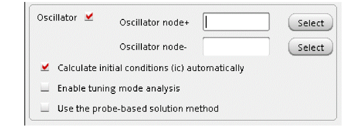 -
In the Oscillator node field, click Select just to the right. In the schematic, select the collector node. This oscillator node will be used by the simulator for the period calculation of the oscillations. It just needs to be a node that has the oscillator signal on it.
Figure 3-16 Selecting collector net on oscillator_ckt schematic -
If you have an LC oscillator, leave the Calculate initial conditions (ic) automatically checkbox selected (this is the default).
Note that Calculate initial conditions (ic) automatically is used to start the oscillator. Other methods to start the oscillator include putting a single current pulse into the resonator, setting initial conditions(ic), or ramping up the power at time = zero plus.
Figure 3-17 Choosing Analyses Form - PSS-Harmonic Balance Setup
Figure 3-18 ADE Explorer Simulation Window - PSS Analysis -
Select pss as Analysis. The form expands.
Running the PSS analysis
Once finished setting up the PSS analysis click the green icon on the right hand side of the ADE Explorer window or on the Schematic window to run the simulation.
This netlists the design and runs the simulation. A SpectreRF status window appears (spectre.out logfile). When the analysis has completed, you may iconify the status window.
Next, you will plot the results.
Plotting the PSS Analysis Results
In ADE Explorer, select Results - Direct Plot - Main Form. The Direct Plot Form window is displayed.
Figure 3-19 The Direct Plot Form Window
Plot the oscillator startup waveform from tstab run.
- In the Direct Plot Form window, select tstab in the Analysis section.
- Leave Function as PSS Transient V which is set by default.
- Select Net in the center of the form. (This is the default. You can also select differential nets).
-
The Direct Plot Form window should look like the following:
Figure 3-20 PSS Analysis Direct Plot Setup - Initial Transient -
Select the collector net in the schematic. It is located just below the collector label.
Figure 3-21 Selecting collector net on oscillator_ckt schematic
The waveform window is displayed.
Figure 3-22 PSS Analysis - Initial Startup Waveform during tstab interval
This plot shows how the initial startup waveform for oscillator gets build up during the tstab interval. Note that the oscillator starts up immediately after time zero. This is because the calculate initial conditions was automatically set in the Choosing Analyses form.
Next you will plot the oscillator output spectrum
Plot the oscillator spectral content, as follows:
- In the Direct Plot Form window, set the Plotting Mode to New Win.
- Select pss as Analysis.
- Leave Function as Voltage, which is set by default.
- Leave the Select section of the form set to the default value, Net (You can also select differential nets).
- Select Sweep as spectrum. (This is the default)
- Select rms as Signal Level (the default is peak).
- Select dB20 as Modifier.
-
Your Direct Plot Form window should like the following:
Figure 3-23 PSS Analysis Direct Plot Form Setup -
Select the collector net in the schematic. It is located just below the collector label.
Figure 3-24 Selecting collector net on oscillator_ckt schematicThe waveform window is displayed, as shown below.
Figure 3-25 PSS Analysis output Graph Window - Voltage Spectrum Plot -
In the waveform window, position your cursor near the first harmonic, and press the ‘m’ key. Here ‘m’ is the bindkey to place a trace marker on the graph. The first harmonic is chosen as this is the frequency oscillator is designed for.
Note that this frequency is 1.833GHz. This is the frequency of oscillation. - In the Direct Plot Form, click Cancel.
- In the ViVA window, choose File - Close All Windows.
- Clean up the screen for the next set of measurements.
- Close the Analog Design Environment window by selecting Session - Quit.
- In the Schematic window, choose File - Close.
To summarize, a PSS analysis using Harmonic Balance was setup and simulation was run to determine the oscillation frequency of the oscillator. Next an Oscillator Loop Gain measurement will be performed.
Oscillator Loop Gain Measurement
Oscillator loop gain measurements are typically made with a combination of linear stability (stb), Harmonic Balance (hb), and HBSTB (hbstb) analyses. The hb analysis solves for one period of the settled time-domain waveform. Stability Analysis (stb) allows the measurement of the loop gain and phase. This is quite useful for the design of the feedback network. Note that, stb analysis is a linear analysis and therefore does not take non-linearities of the circuit into account. However, it gives an approximate value of loop gain magnitude and phase and is faster to run. In order to get more accurate values of loop gain and phase of periodically time-varying non-linear circuits, you need to run hbstb analysis. The harmonic balance stability analysis (hbstb) evaluates the local stability of a periodically time-varying feedback circuit. It is a small-signal analysis, like stb analysis, except that the circuit is first linearized about a periodically varying operating point (determined using hb analysis) as opposed to a simple DC operating point (which is used in stb analysis). Linearizing about a periodically time-varying operating point allows the stability evaluation to include the effect of the time-varying operating point.
Opening the Oscillator Circuit in the Schematic Window
-
In the Command Interpreter Window (CIW), choose File – Open.
Figure 3-26 Virtuoso CIW Window - Opening CellviewThe Open File form is displayed. - Select ExampleLibRF from the Library drop-down list.
- In the Cells field, type oscillator_ckt.
- Choose schematic from the View drop-down list.
- In the Application section, select Schematics L from the Open With drop-down list.
-
Leave Open for to Edit (which is set by default).
Figure 3-27 Open File Form to open the oscillator_ckt cell’s Schematic View -
Once all the setup is done, click OK.
This will open the oscillator_ckt schematic in Virtuoso Schematic Editor L window, as shown below:
Figure 3-28 oscillator_ckt schematic in VSE L Window
Setting up the stb Analysis
-
In the Schematic Window, choose Launch - ADE Explorer.
Figure 3-29 Opening ADE Explorer window from VSE window -
In the Launch ADE Explorer dialog, select Create New View.
The Create new ADE Explorer view form is displayed.
Figure 3-30 Create new ADE Explorer view -
Leave each option to the default selections and click OK.
Virtuoso ADE Explorer is opened, as shown below.
Figure 3-31 ADE Explorer
-
Select Setup – Simulator.
The Choosing Simulator form is displayed. -
Select spectre for the Simulator.
Figure 3-32 Choosing Simulator Form - Click OK.
-
Select Setup - High Performance Simulation. The High Performance Simulation Options window is displayed.
In the High Performance Simulation Options window, select APS. Note that Auto is selected for Multithreading options. The effect of this is to detect the number of cores on the system (up to 16) and then multi-thread on all the available cores. Usually it is better to specify the number of threads yourself. Small circuits should use a small number of threads, and larger circuits can use more threads. The overhead of managing 16 threads on a smaller circuit may actually slow the simulation down, compared to two or four threads. Use the number of threads that maximizes the performance.
Figure 3-33 High Performance Simulation Options Form - Click OK.
-
Select Outputs – Save All.
The Save Options form is displayed. -
In the Select signals to output (save) section, make sure that allpub is selected.
Figure 3-34 Save Options FormThis is the default selection. This saves all of the node voltages at all levels of the hierarchy, but it does not include the node voltages inside the device models.
To save the currents, use the Select device currents (currents) option, and select nonlinear if you just want to save the device currents, or all if you want to save all the currents in the circuit. When you save currents, more disk space is required for the results file. - Click OK.
-
Select Setup - Simulation Files.
The Simulation Files Setup form is displayed. -
In the Simulation Files Setup form, enter ./ by clicking in the Include Paths section. It should look like the following:
Figure 3-35 Simulation Files Setup Form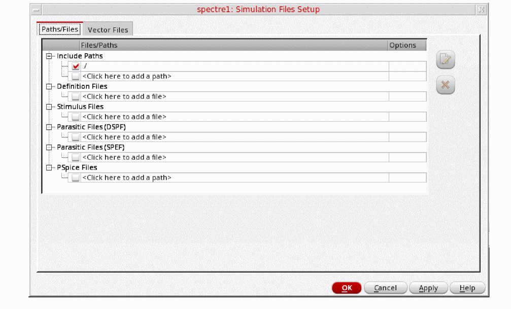 - Click OK to close the Simulation Files Setup form.
-
Select Setup – Model Libraries.
The Model Library Setup form is displayed. -
In the Model File field, type the path to the model file including the file name, as shown below.
models/modelsRF.scs
Figure 3-36 Model Library Setup Form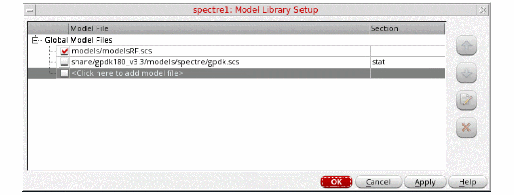You can also browse to modelsRF.scs file. - Click OK.
-
Select Analyses - Choose.
The Choosing Analyses form is displayed, as shown below.
Figure 3-37 The Choosing Analyses Form -
In the Analysis section, select stb.
Figure 3-38 The Choosing Analyses Form - stb Analysis Setup - Type 1m in the Start Field. Note the lower case m. This means the start frequency is 0.001 Hz.
-
Type 1T in the Stop field. This will set the stop frequency to 1 THz.
The frequency range is deliberately set very wide in order to detect potential parasitic oscillation modes. - Select Logarithmic sweep.
- Type 100 for Points per Decade. The frequency coverage is set to be very dense as this analysis runs quickly.
- Click Select to the right of the Probe Instance/Terminal field.
-
In the schematic, click the instance that looks like an analog meter in the center of the circuit. This is an iprobe from analogLib.To use stability analysis, either an iprobe or a vdc set to 0 Volts needs to be added in series with the feedback path. In this case, an iprobe is used. The current probe and the vdc source both have zero resistance. Because of this the loading in the loop is maintained. In the past, the AC part of the loading had to be broken in order to get a loop gain measurement. For a differential circuit, use diffstbprobe from analogLib.Your Choosing Analyses form should look like this:
Figure 3-39 Choosing Analyses Form - stb Analysis SetupClick Apply at the bottom of the Choosing Analyses form. This will add the stb analysis in the Analyses section of ADE Explorer, as shown below:
Figure 3-40 ADE Explorer Simulation Window - stb analysis setup
Setting up the HB Analysis
-
Select hb as Analysis. The form expands.
Figure 3-41 The Choosing Analyses Form - Setting HB Analysis - Leave the Run transient option to the default value of Decide Automatically.
- Select yes for Save Initial Transient Results (savinit). This will help in visualizing the buildup of the oscillator waveform.
-
In the Fundamental Frequency field, type
1.9G. The frequency entered here is an approximate frequency of oscillation. -
In the Number of harmonics field, type
15.
In general, you want to choose a number that is high enough to capture the nonlinearity of the circuit. Start with 10, and run the simulation. Increase by about 50% to 15 and re-run the simulation. If the harmonics donot change appreciably, then 10 is enough. If they change, increase the number by about 50%. Use the smallest number of harmonics for the answer to be stable. -
Leave Oversample Factor as default (that is,
1). Since the oscillator has sinusoidal waveforms, an oversample of 1 is appropriate. -
Leave the Freqdivide Ratio for Tone 1 option to the default value of
1. - In the Accuracy Defaults (errpreset) section, select conservative. conservative is typically used because very small amplitude phase noise measurements are normally desired. Conservative is recommended for all the oscillators.
-
Select Oscillator. This is required for simulating an autonomous circuit.
Figure 3-42 The Choosing Analyses Form - Oscillator Section - In the Oscillator node+ field, click Select just to the right of the field. In the schematic, select the collector node. This is the net just below the collector label. This oscillator node will be used by the simulator for the period calculation of the oscillations. It just needs to be a node that has the oscillator signal on it.
-
Leave the Oscillator node- field blank.
Note that if you have a single-ended oscillator, only specify one node. If the second node, (the reference node) is left blank, it will be connected to the global ground node automatically. However, if you have a differential oscillator, you need to specify both the nodes.
Figure 3-43 Selecting collector net on oscillator_ckt schematic -
If you have an LC oscillator, leave the Calculate initial conditions (ic) automatically checkbox selected (this is the default).
Note that Calculate initial conditions (ic) automatically is used to start the oscillator. Other methods to start the oscillator include putting a single current pulse into the resonator, setting initial conditions(ic), or ramping up the power at time = zero plus. -
Note that by default Use the probe-based solution method (oscmethod) option is deselected. Spectre will use the onetier method.
When Setting Use the probe-based solution method (oscmethod) option is selected, it iterates for the frequency solution in the outer loop and the amplitude and phase solution in the inner loop. The probe-based method has better convergence but is computationally intensive.
Please refer to Spectre Circuit Simulator RF Analysis Theory for more details.
The Choosing Analyses form will look like the following:
Figure 3-44 Choosing Analyses Form - Harmonic Balance Setup -
Click Apply located at the bottom of the form. This will add the hb analysis in the Analyses section of ADE Explorer along with stb analysis, as shown below:
Figure 3-45 ADE Explorer Simulation Window - stb and hb Analysis setup
Setting up the HBSTB Analysis
-
In the Choosing Analyses form, select hbstb.
Figure 3-46 The Choosing Analysis Form - hbstb Analysis SetupSet your sweep frequency such that the expected oscillation falls within the sweep range. - Type 1.7G in the Start field.
- Type 2G in the Stop field.
- Set the Sweep Type to Linear.
- Select Number of Steps.
-
Type 100 in the Number of Steps field.
You need to provide number of steps such that you have enough resolution in frequency. In this case, you have 300MHz/100 = 3MHz step resolution. - Click your mouse cursor in the Probe Instance field and click Select which is just to the right of this field. The pstb requires that you place the probe on the feedback loop to identify and characterize the particular loop of interest.
-
In the schematic window, select the iprobe in the center of the circuit. It looks like an analog meter. ‘iprobe’ is required to determine the feedback without breaking the feedback loop.
Figure 3-47 Selecting iprobe instance IPRB0 on the schematicTo use pstb analysis, either an iprobe or a vdc set to 0 Volts needs to be added in series with the feedback path. In this case, an iprobe is used. The current probe and the vdc source both have zero resistance. Because of this the loading in the loop is maintained. In the past, the AC part of the loading had to be broken in order to get a loop gain measurement.The Choosing Analyses form should look like the following.
Figure 3-48 Choosing Analyses Form - hbstb Analysis Setup -
Click OK button at the bottom of the form to close the Choosing Analyses form.
The hbstb analysis gets added along with stb and hb analysis in the Analyses section of ADE Explorer, as shown below.
Figure 3-49 ADE Explorer Simulation Window - stb, hb and hbstb setup
Running the HB, stb and HBSTB analysis
Once finished setting up the HB, HBSTB and stb analysis click the green icon in ADE Explorer or on the Schematic window to run the simulation.
Plotting the results
Plotting the stb analysis results
First plot the Loop Gain magnitude and phase from the stb analysis.
-
In ADE Explorer, select Results - Direct Plot - Main Form.
Figure 3-50 The Direct Plot Form - stb, hb and hbstb Analysis - Select stb as Analysis.
-
Keep the rest of the settings at their default values, that is Loop Gain as Function, Magnitude and Phase as Modifier and dB20 as Magnitude Modifier. Remember that we are trying to plot the Loop Gain magnitude and phase plot.
The Direct Plot Form looks like the following:
Figure 3-51 stb Analysis Direct Plot Form Setup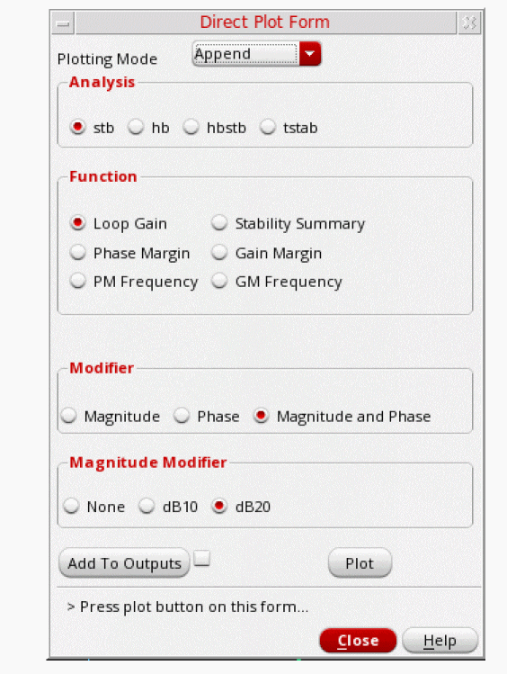 - Click Plot.
-
In the waveform window, click the Split Current Strip icon
. This will add the Loop Gain and Phase plots in two different strips in the same graph window, as shown below.
Figure 3-52 stb Analysis Ouput Graph Window - Loop Gain Magnitude and Phase Plot
On the top of the graph is a plot of loop gain phase in degrees. On the bottom of the graph is a plot of loop gain magnitude in dB. The area in the red box is the unity gain area. -
Now Zoom in to the unity gain area of the Loop Gain Plot. To do this:
- Move your mouse cursor over one of the numbers on the X axis.
- Click the right mouse button and select Axis Properties.
- Click the Scale tab and set Mode to Manual.
- Type 1G in the Minimum cyclic field. This is near to the frequency before the unity gain area starts.
-
Type 2.4G in the Maximum cyclic field. This is frequency near to which the unity gain area ends.
Figure 3-53 Graph Window X-Axis Setup - Click OK.
This will provide the zoomed in plot of Loop Gain’s Magnitude and Phase from 1GHz to 2.4GHz frequency range.
Figure 3-54 stb Analysis Loop Gain Magnitude and Phase Zoomed-in Plot
In traditional control system analysis, an oscillator will oscillate when the loop gain is greater than unity and the phase is 180 degrees. This assumes that there is an inverting summing junction in the feedback loop. In the circuit, we cannot separate out the summing junction, and so the loop gain measurement contains it. In the phase plot, what one looks for is zero or multiples of 360 degrees, not 180 degrees.
-
Place a vertical marker at 360 degrees phase, as follows:
- Move the mouse cursor near the 360 degree phase point and type v. This will place a vertical marker.
- Move your mouse cursor over the vertical marker. The cursor will change shape.
- Right-click and select Intercepts - On.
- Select the vertical marker, click and hold the mouse button, and place it at 360 degrees.
The graph window will look like the following:
Figure 3-55 stb Analysis - 360 degree Marker Placement -
Select Window - Assistants - Vert Marker Table.
Figure 3-56 ViVA XL - Selecting Marker ToolboxThe Marker Table window appears with the data for the phase and gain curve intercepts along with the frequency.
The Graph Window will look like the following:
Figure 3-57 Oscillation frequency determination from stb Loop Gain PlotNote that the loop gain is just over 4.5 dB on the Loop Gain dB20 curve. (Greater than unity gain.) The oscillator should oscillate.
Note that the frequency of oscillation based on linear stb analysis is 1.89GHz. You’ll refer to this later. - In the Direct Plot Form, click Cancel. In the ViVA window, select File - Close All Windows.
Plotting up the hbstb Analysis Results
Next plot the hbstb Loop Gain magnitude and phase. This time you will plot the results from the Schematic Window. Once you open an ADE Explorer session/window from Virtuoso Schematic Editor L Window, the Setup and Run and Results toolbar gets added to this Schematic Editor Window, as shown in the figure below:
Figure 3-58 ADE Explorer menu in VSE L Window
You may refer to Virtuoso ADE Explorer User Guide for more information regarding these simulation menu icons.
Click the red arrow in the icon located at the right. This will open the Direct Plot menu options. Select Main form, as shown below:
Figure 3-59 Running Simulation from VSE L Window
The Direct Plot Form is displayed.
- In the Direct Plot Form, select hbstb in the Analysis section.
- Select Loop Gain in the Function section.
- Select Magnitude in the Modifier section.
-
Select dB20 in the Magnitude Modifier section.
The Direct Plot Form looks like the following:
Figure 3-60 HBSTB Direct Plot Loop Gain Magnitude Setup -
Click Plot. The Plot Window will be displayed, as shown below.
Figure 3-61 HBSTB Loop Gain Magnitude Plot -
Next, plot the hbstb Loop Gain phase. Select Phase in the Modifier section with Loop Gain selected in the Function section.
The Direct Plot Form looks like the following:
Figure 3-62 HBSTB Direct Plot Loop Gain Phase Setup -
Click Plot. The Graph Window will look like the following:
Figure 3-63 hbstb Analysis Loop Gain Magnitude and Phase Plot -
Next, you need to place a vertical marker at zero degrees on the plot and get the marker table. To do this:
- Type v to place a vertical marker.
- Select the vertical marker, click and hold the left mouse button, and place it at near zero degrees.
The Plot will look like the following:
Figure 3-64 hbstb Loop Gain magnitude and phase plot with vertical marker -
Select Window - Assistants - Vert Marker Table.
The Marker Table window is displayed with the data for the phase and gain curve intercepts along with the frequency.
Figure 3-65 hbstb Analysis Loop Gain Plot with unexapnded Verticle Marker Table -
Note that in the plot window, initially only frequency value is visible and the Loop Gain and Phase values are blank. Click the + sign, located to the left of the Loop Gain dB20 & Loop Gain Phase entry to expand them and see their respective values, as shown in the figure below.
Figure 3-66 pstb Analysis Loop Gain Plot with Vertical Marker TableNote that the Loop Gain magnitude is very near unity gain.
Also note that the oscillation frequency determined from hbstb analysis is 1.83GHz, slightly different than the oscillation frequency 1.89GHz determined from linear stability analysis, that is, stb. Linearizing about a periodically time-varying operating point in hbstb analysis allowed the stability evaluation to include the effect of the time-varying operating point as mentioned earlier.This has changed the oscillating frequency a little in comparison to the one determined using stb.
Next, hb Analysis Results will be plotted. You would note that how well pss results agree with the hbstb results.
Plotting up the PSS Analysis Results
Next plot the oscillator spectral content -
- In the Direct Plot Form window, set the Plotting Mode to New Win.
- Select hb as Analysis.
- Leave Function as Voltage which is set by default.
- Select Net in the center of the form. (This is the default. You can also select differential nets).
- Select Sweep as spectrum. (This is the default)
- Select rms as Signal Level (default is peak).
- Select dB20 as Modifier.
-
Your Direct Plot Form should like the following:
Figure 3-67 HB Analysis Direct Plot Form Setup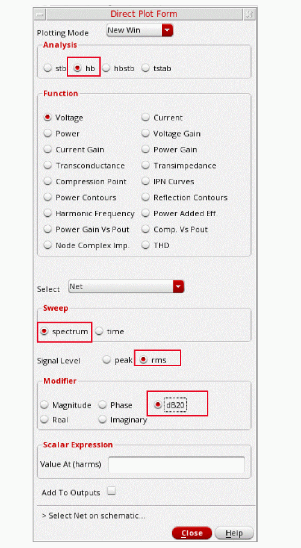 -
Select the collector net in the Schematic. It is located just below the collector label.
Figure 3-68 Selecting collector net on oscillator_ckt schematicThe waveform window is displayed, as shown below.
Figure 3-69 HB Analysis output Graph Window - Voltage Spectrum Plot -
In the waveform window, position your cursor near the first harmonic, and press the m key. Here m is the bindkey to place a trace marker on the graph. The first harmonic is chosen as this is the frequency oscillator is designed for.
Note that this frequency is 1.83075G. This is the frequency of oscillation.
Note that the oscillation frequency determined from pstb analysis agrees very well with the pss-hb analysis. - In the Direct Plot Form, click Cancel. In the ViVA window, choose File - Close All Windows.
- Close the Analog Design Environment window by selecting Session - Quit.
- In the Schematic window, choose File - Close.
In this section, the B magnitude and phase measurements were done using stb, hb, and hbstb analysis. In addition, the oscillation frequency was determined using these measurements.
Next, the phase noise measurement which is one of the key measurement in oscillator design will be done. Also, the Noise Summary Table will be obtained.
Phase Noise Measurement and Noise Summary Table
Opening the Oscillator Circuit in the Schematic Window
-
In the Command Interpreter Window (CIW), choose File - Open.
Figure 3-70 Virtuoso CIW Window - Opening CellviewThe Open File form is displayed. - Select ExampleLibRF from the Library drop-down list.
- In the Cells field, type oscillator_ckt.
- Select schematic fromthe View drop-down list.
- In the Application section, select Schematic-L from the Open With drop-down list.
-
Leave Open For to Edit (which is set by default).
Figure 3-71 Open File Form to open the oscillator_ckt cell’s Schematic View -
Once all the setup is done, click OK to close the Open File form.
This will open the oscillator_ckt schematic in Virtuoso Schematic Editor L window, as shown below.
Figure 3-72 Oscillator Schematic opened in Virtuoso Schematic Editor L Window
Setting up the HB and HBnoise Analysis
In this section, for performing phase noise measurement, you would be using the hb and hbnoise analyses.
-
In the Schematic Window, choose Launch - ADE Explorer.
Figure 3-73 Opening ADE Explorer window from VSE window -
In the Launch ADE Explorer dialog, select Create New View.
The Create new ADE Explorer view form is displayed.
Figure 3-74 Create new ADE Explorer view -
Leave each option to the default selections and click OK.
The ADE Explorer window is displayed, as shown below.
Figure 3-75 Virtuoso ADE Explorer Window -
In ADE Explorer, select Setup – Simulator.
The Choosing Simulator form is displayed. -
Select spectre as the Simulator.
Figure 3-76 Choosing Simulator/Director/Host Form - Click OK.
-
Select Setup - High Performance Simulation. The High Performance Simulation Options window is displayed.
Figure 3-77 High Performance Simulation Options Form - In the High Performance Simulation Options window, select APS. Note that Auto is selected for Multithreading options. The effect of this is to detect the number of cores on the system (up to 16) and then multi-thread on all the available cores. Usually, it is better to specify the number of threads yourself. Small circuits should use a small number of threads, and larger circuits can use more threads. The overhead of managing 16 threads on a smaller circuit may actually slow the simulation down, compared to two or four threads. Use the number of threads that maximizes the performance.
- Click OK to close the High Performance Simulation Options form.
-
In ADE Explorer, select Outputs - Save All.
The Save Options form is displayed.
Figure 3-78 Save Options Form -
In the Select signals to output section (save), ensure that allpub is selected.
This is the default selection. This saves all of the node voltages at all levels of the hierarchy, but it does not include the node voltages inside the device models.
To save the currents, use the Select device currents (currents) option, and select nonlinear if you just want to save the device currents, or all if you want to save all the currents in the circuit. When you save currents, more disk space is required for the results file. - Click OK.
-
Select Setup - Simulation Files.
The Simulation Files Setup form is displayed, as shown below.
Figure 3-79 Simulation Files Setup Form -
In the Simulation Files Setup form, type
./by clicking in the Include Paths section. - Click OK to close the Simulation Files Setup form.
-
Select Setup – Model Libraries.
The Model Library Setup form is displayed.
Figure 3-80 Model Library Setup Form -
In the Model File field, type the path to the model file including the file name, as shown below:
models/modelsRF.scs
You can also browse to the modelsRF.scs file. - Click OK to close the Model Library Setup form.
-
Select Analyses - Choose.
The Choosing Analyses form is displayed, as shown below.
Figure 3-81 The Choosing Analyses Form -
Select hb in the Analysis section. The form expands, as shown below.
Figure 3-82 The Choosing Analyses Form - Setting hb analysis -
In the Transient-Aided Options section, leave Run Transient? as Decide automatically, which is set by default.
The other choices for this option are Yes and No. If Yes is used then the Detect Steady State option becomes active and the Stop Time(tstab) field is also activated. This means that you can decide whether you would like the Steady State to be detected automatically during the transient run or not and also specify a Stop time(tstab) for that transient run. When you select the checkbox for Detect Steady State option, this will run the transient analysis until steady-state is detected and then switches to hb. - Select yes for Save Initial Transient Results (saveinit). This will help in visualizing the buildup of the oscillation waveform.
-
Select Names in the Tones section. The other option is Frequencies, which is selected by default.
Names is chosen here as it is similar to pss Harmonic Balance analysis setup. The form changes, as shown below.
Figure 3-83 The Choosing Analyses Form - Setting hb analysis using Names -
Select the Oscillator option. This is required for simulating an autonomous circuit.
Figure 3-84 The Choosing Analyses Form - Oscillator Section -
A popup window, as shown below appears. This informs about creation of an osc! frequency line entry in the Tones field. Click Close to close the window.
Figure 3-85 Popup Window - osc! entry creation messageClosing the above popup window will result in creation of the osc! frequency line in the Tones section, as shown below.
Figure 3-86 Choosing Analyses Form - hb autonomous setup -
Select the osc! row in the Tones section.
-
Enter
1.9Gin the Expr field. - Leave the Number of Harmonics option set to auto. When Number of Harmonics is set to auto, the simulator calculates harmonics automatically. The calculation is based on Fourier analysis of transient steady-state waveforms.
- Leave the Ovsap option as set to 1. Since the oscillator has sinusoidal waveforms, an oversample of 1 is appropriate.
-
Enter
-
Enter
1for the Freqdivide Ratio for Tone with Tstab option (which is set by default) as there is no frequency divider in the circuit. If there is a frequency divider in the circuit, then you need to set the Freqdivide Ratio for Tone with tstab to the divide ratio of the divider. For example, if the divider is divide-by-two, then the divide ratio is 2. Therefore, you will set Freqdivide Ratio for Tone with tstab to 2. - Leave the Harmonics option set to Default.
-
In the Accuracy Defaults (errpreset) section, select conservative.
conservative is typically used because very small amplitude phase noise measurements are normally desired. Conservative is recommended for all the oscillators. -
In the Oscillator section, in Oscillator node+ field, click Select just to the right of this field. In the schematic, select the collector node. Instead of selecting the node from the schematic you can also type
/collectorin the Oscillator node+ field.
This oscillator node will be used by the simulator for the period calculation of the oscillations. It just needs to be a node that has the oscillator signal on it.
Leave Oscillator node- blank.
Note that if you have a single-ended oscillator, only specify one node. If the second node that is, the reference node is left blank, it will be connected to the global ground node automatically. However, if you have differential oscillator, you need to specify both the nodes.
Figure 3-87 Selecting collector net on oscillator_ckt schematic -
If you are simulating an LC oscillator, leave the Calculate initial conditions (ic) automatically checkbox selected (this is the default).
Note that Calculate initial conditions (ic) automatically is used to start the oscillator. Other methods to start the oscillator include putting a single current pulse into the resonator, setting initial conditions(ic), or ramping up the power at time = zero plus. -
Note that, by default, the Use the probe-based solution method (oscmethod) option is deselected. Spectre will use the onetier method.
When the Use the probe-based solution method (oscmethod) option is selected, it iterates for the frequency solution in the outer loop and the amplitude and phase solution in the inner loop. The probe-based method has better convergence but is computationally intensive.
Refer to Spectre Circuit Simulator RF Analysis Theory for more details. -
The Choosing Analyses form will look like the following:
Figure 3-88 Choosing Analyses Form - HB Analysis Setup -
Click Apply.
This will add hb analysis to the Analyses section of ADE Explorer, as shown below:
Figure 3-89 ADE Explorer Simulation Window - hb analysis setup
Setting up the hbnoise Analysis
Starting with IC617, the noise UI is re-designed. modulated has been removed and its functionalities are merged with timeaverage, leaving three noise types now. In addition, the FM jitter option is removed. It is calculated through timeaverage PM noise, which should be used when you want to get phase noise.
When Noise Type is set to timeaverage, USB, LSB, AM and PM noises are directly available.You can choose, for example, PM noise alone, or you can select the ALL(AM,PM,USB,LSB) option, if you need all four types of noise. The available options are USB, AM, PM, AM&PM, and ALL(AM,PM,USB,LSB).
-
In the Choosing Analyses form select hbnoise analysis. The form expands, as shown below.
Figure 3-90 hbnoise Choosing Analyses Form -
Set the Sweeptype to relative.
For oscillators, the hbnoise/pnoise frequency range is relative. Specify the harmonic number as appropriate for the system you are simulating. If you are simulating an oscillator by itself, then the harmonic number is likely to be 1. If you have an oscillator and a diode frequency doubler, then the harmonic number is likely to be 2. If you have an oscillator with a frequency divider, in the hb/pss form, you should specify the approximate frequency of oscillation for the frequency-divided signal. In the hbnoise/pnoise form, if the noise is desired on the frequency divided output, then the relative harmonic is 1. If the noise is desired at the output of the oscillator, the relative harmonic number is the divide ratio. The meaning of relative is to take the frequency of the harmonic number specified and add to it the frequencies specified in the Choosing Analyses form. If the oscillator has a 1GHz output, and the pnoise had 1M relative to the first harmonic specified, the actual output frequency is 1G + 1M, or 1001M.-
Type
1in the Relative Harmonic field. You are trying to determine the noise associated with the fundamental frequency of the oscillator.
Next, you will set the output frequency sweep range. Frequency sweep is set for a noise simulation as the noise is spread over the frequency range and it can affect the adjacent frequency channels. Therefore, it is critical to determine its behavior over a frequency range. -
Type
10in the Start Field in the Output Frequency Sweep Range (Hz) section. -
Type
100Min the Stop Field in the Output Frequency Sweep Range (Hz) section.
Set the frequency sweep range as appropriate for your circuit (or application). - Set the Sweep Type to Logarithmic.
-
Type
3in the Points Per Decade field. Typically, 3 to 5 points per decade are a reasonable number to capture the noise behavior of the circuit.
-
Type
- Leave the Maximum Sideband field blank. In general, Maximum sideband needs to be set high enough to include all the frequencies that could mix down to the oscillator output frequency. By default, when this field is left blank, all the mixing with all the hb harmonics are present in the hbnoise result.
-
Set the Output to voltage.
-
Type
/outin the Positive Output Node field. You can also select the out net from the schematic by clicking the Select button on the right of the Positive Output Node field and then selecting the net just below the out label in schematic. -
Leave the Negative Output Node field blank. If the second node that is the Negative Output Node is left blank, it will be connected to the global ground node automatically. However, if you have a differential oscillator, you need to specify both the nodes.
Figure 3-91 Selecting out net from the schematic
-
Type
- The Do Noise option is selected by default. Next, you will set the Noise Type.
- Set the Noise Type to timeaverage. Here, the other available options are jitter and timedomain.
-
Select the ALL(AM,PM,USB,LSB) option.
Selecting the ALL(AM,PM,USB,LSB) will enable you to view all noise components on the Direct Plot form. -
Set Noise Separation to yes.
The Noise Separation option enables you to plot the individual noise contributors. -
The Choosing Analyses form should look like the following:
Figure 3-92 Choosing Analyses Form - hbnoise Analysis Setup -
You now need to set up the lorentzian option for the hbnoise analysis.
HBnoise/Pnoise is a small-signal analysis and is not limited by large-signal effects, such as clipping or slew-rate limits. As a result, at low offset frequency, the phase noise might be significantly greater than 0dBc/Hz. This indicates that the noise is larger than the oscillations, which is not physically possible. If you want to see the phase noise curve level off at low frequency, set the lorentzian option to yes.- At the bottom of the Choosing Analyses form, select Options. This will open Harmonic Balance Noise Options form.
-
Select yes for lorentzian option in the OUTPUT PARAMETERS section of this form.
The Harmonic Balance Noise Options Form should look like the following:
Figure 3-93 hbnoise Options Setup Form
- Click OK to close the Harmonic Balance Noise Options form.
-
Next click OK to close the Choosing Analyses form. This will also add the hbnoise analysis in addition to the hb analysis in the ADE Explorer Analyses section, as shown below.
Figure 3-94 ADE Explorer Simulation Window - hb and hbnoise analysis setup
Once finished setting up the hb and hbnoise analyses. Click the green icon located on the right side ADE Explorer or on the Schematic window to run the simulation.
Next, plot the phase noise results and obtain the Noise Summary Table once the simulation is finished.
Plotting the results from hb and hbnoise analysis
First plot the SSB (single sideband) phase noise, as follows:
-
In ADE Explorer, select Results - Direct Plot - Main Form.
Figure 3-95 hb and hbnoise Direct Plot FormNote that in the Direct Plot form, hbnoise separation analysis is added as you have set Noise Separation to yes in the hbnoise analysis setup form and tstab is added as you have set Save Initial Transient Results (saveinit) to yes in the hb analysis setup form. - Select hbnoise as the Analysis.
- Select PM as the Noise Type.
-
Select Phase Noise as the Function.
The Direct Plot Form Setup should look like the following:
Figure 3-96 hbnoise Analysis Direct Plot Form Setup -
Click Plot.
The phase noise is plotted, as shown below:
Figure 3-97 Phase Noise Plot with CorFreq LabelThe label CorFreq shows an estimate of the point on the phase noise where the phase noise curve in the physical world levels off instead of continuing its rise. -
Select File - Close All Windows to close the Graph Window in ViVA.
Next, you will plot the hbnoise Separation.
The key aspect in noise analysis is finding out what is causing the noise problem. Hbnoise provides the total noise from all noise frequencies, and in the noise summary, it provides the noise contributors with all the noise frequencies taken into account. The idea of noise separation is several-fold. First, you can identify the noise frequencies that cause the most noise at the output. Once you know the troublesome frequencies, you can identify the troublesome components. Once you know the troublesome components, you can identify the specific mechanisms within the component that are causing the problem. You can then work upon to find the solution to this problem which may include using different device dimensions or alternate circuit architectures and so on.
To summarize, noise separation is a way of extending standard hbnoise to find out more information about what is causing the problem related to noise. Once the problem is identified, then a solution can be worked upon to fix it.
When Noise type is set to timeaverage and Noise Separation is set to yes in the Choosing Analyses form while setting hbnoise, the hbnoise separation feature is included during the simulation and the corresponding results are saved. -
In the Direct Plot Form, select hbnoise separation in the Analysis section. The Direct Plot Form changes, as shown below.
Figure 3-98 Direct Plot Form for hbnoise Separation - Leave Noise Type selected as PM.
- In the Function section, select Sideband Output. Sideband Output plots the noise contribution of selected sidebands to the output.
- In the Signal Level section, select V / sqrt(Hz).
- Choose dB20 as the Modifier.
-
Select the -1, 0, and 1 Output Sidebands.
This will plot the noise contribution of the -1, 0, and 1 sidebands to the output. This allows the identification of which noise frequencies are causing the largest noise contribution at he output of the circuit.You can click and hold the mouse over the -1 output sideband and slide the cursor to include the 1 output sideband.The Direct Plot Form should look like the following:
Figure 3-99 Direct Plot Form setup for hbnoise Separation - Sideband Output -
Click Plot.
The hbnoise separation plot is shown below. Note that the harmonic numbers plotted are in the legend on the left side of the screen.
Figure 3-100 HBnoise Separation, plot of -1, 0, 1 Sideband -
Next, plot the Instance output for the largest noise contributor above (It is the -1 sideband in this case). This will show which components contribute the most noise at the output. In the Direct Plot Form, first set the Plotting Mode to New Win then select Instance Output. Verify that the Signal Level is set to V/sqrt(Hz). Set the Modifier to dB20. Select the -1 Output sideband. In the Filter section, select Include All Types. In the Truncate section, enter
3in by top number of instance output. The Direct Plot Form should look like the one below:
Figure 3-101 Direct Plot Form for Plotting Instance Output for Noise Contribution of instances -
Click Plot. The plot is displayed. There are three plots for the top three noise contributors.
Figure 3-102 Plotting Output Noise Top Instance Contributors - If you hover your mouse over a particular trace, it will show which instance contributes the most amount of noise. Above, the red line represents the noise contribution from the instance Q0 (legend shown), the yellow line below represents the noise contribution from instance R2, and the bottom green line represents the noise contribution from instance D0.
-
Next, plot the Source Output so you can see which individual noise sources within the circuit are contributing the most noise. In the Direct Plot Form, change the Function to Source Output. Select Signal Level to be V/sqrt(Hz). Set the Modifier to dB20. Leave the Output Sideband at -1. In the Filter section, select the Include All Types option. In the Truncate section, type
3in the by top field. The Direct Plot Form should look like the one below.
Figure 3-103 Direct Plot Form for Plotting by Top 3 Source Noise Contributors -
Plot the source output so you can see which individual noise sources within the circuit that are making the most noise.
Figure 3-104 Top 3 Source Noise Contributors - Note that the top three Source Output contributors are displayed in the legend on the left side of the graph: Q0:fn, R3:rn and Q0:ib. Here “fn” is the flicker noise, “ib” is the base current shot noise of BJT and “rn” is the resistor thermal noise. See Chapter 3 in this guide for more information on the various noise parameters.
- In the Direct Plot Form, click Cancel.
- In the ViVA window, choose File - Close All Windows.
This table provides the list of noise contributors based on the selections made on the Noise Summary Table form.
-
In ADE Explorer, select Results -Print - Noise Summary.
Figure 3-105 Print Noise Summary in ADE ExplorerThe Results Display Window and Noise Summary form are displayed. The Results Display Window will currently be blank, as shown below:
Figure 3-106 Results Display WindowThe Noise Summary form is shown below.
Figure 3-107 Noise Summary Setup Form - In the Noise Summary window, set Data from as hbnoise_pm.
- Set Type as spot noise.
-
Set Frequency Spot (Hz) to
10K. In spot noise, you will be looking at the noise at one frequency. - Click Include All types in the Filter section. This will include the noise contributions from all devices including resistor, inductor and so on.
-
In the Truncate and Sort section, enter
10in the top field. The top 10 noise contributors in the Results Display window are displayed.-
by number - that is, by specifying the highest contributors to include in the summary,
or -
by relative threshold - that is, by specifying the percentage of noise a device must contribute to be included in the summary,
or - by absolute threshold - that is by specifying the level of noise a device must contribute to be included in the summary.
-
by number - that is, by specifying the highest contributors to include in the summary,
-
Click OK.
The noise summary results are displayed in the Results Display Window, as shown below:
Figure 3-108 Noise Summary Results Display WindowThe Results Display Window lists the individual contributors, the specific noise mechanism within the semiconductors causing the noise, and the noise contribution. The Total Summarized Noise is shown at the bottom of the Results Display window. Since there is no Input Source present, so there is no input referred noise available. This is usually the case for oscillators.
Note that the output noise include the noise from all the noise contributors, and not just the contributors in the form. - In the Results Display Window, select Window - Close to close the window.
- Close the Analog Design Environment window by selecting Session - Quit.
- In the Schematic window, choose File - Close.
In this section, one of the key measurements of Oscillator design, that is, phase noise measurement was explained along with obtaining the noise summary.
Next, you will perform Swept HB measurements, that is Tuning Voltage vs. Oscillation Frequency and Phase Noise vs. Tuning Voltage Measurements.
Oscillator Swept Tuning Range and Phase Noise Measurement
In this section, you will sweep the oscillator tuning range while running multiple HB/HBnoise analyses. This will give the information about phase noise vs. tuning range.
Opening the Oscillator Circuit in the Schematic Window
-
In CIW, select File - Open.
Figure 3-109 Virtuoso CIW Window - Opening CellviewThe Open File form is displayed.
Figure 3-110 Open File Form to open the oscillator_ckt cell’s Schematic View. - Select ExampleLibRF from the Library drop-down list.
-
In the Cells field, type
oscillator_ckt. - Choose schematic from the View drop-down list.
- In the Application section, select Schematic L from the Open With drop-down list.
- Leave Open For to Edit (which is set by default)
-
Click OK.
This will open the oscillator_ckt schematic in Virtuoso Schematic Editor L window.
Figure 3-111 Oscillator Schematic in VSE-L Window
Setting up the HB and HBnoise Analysis
-
In the Schematic Window, select Launch - ADE Explorer.
Figure 3-112 Opening ADEL window from VSE window -
In the Launch ADE Explorer dialog, select Create New View.
The Create new ADE Explorer view form is displayed.
Figure 3-113 Create new ADE Explorer view -
Leave each option to the default selections and click OK.
ADE Explorer is displayed, as shown below.
Figure 3-114 Virtuoso ADE Explorer -
Select Setup - Simulator in the ADE Explorer
The Choosing Simulator form is displayed.
Figure 3-115 Choosing Simulator/Director/Host Form - Select spectre as the Simulator.
- Click OK to close the Choosing Simulator form.
-
In ADE Explorer, select Setup - High Performance Simulation.
The High Performance Simulation Options form is displayed.
Figure 3-116 High Performance Simulation Options Form -
In the High Performance Simulation Options window, select APS.
Note that Auto is selected for Multithreading options. The effect of this is to detect the number of cores on the system (up to 64) and then multi-thread on all the available cores. Usually, it is better to specify the number of threads yourself. Small circuits should use a small number of threads, and larger circuits can use more threads. The overhead of managing 16 threads on a smaller circuit may actually slow the simulation down, compared to two or four threads. Use the number of threads that maximizes the performance. - Click OK to close the High Performance Simulation Options form.
-
In ADE Explorer, select Outputs - Save All.
The Save Options form is displayed.
Figure 3-117 Save Options Form -
In the Select signals to output (save) section, make sure that allpub is selected.
This is the default selection. This saves all of the node voltages at all levels of the hierarchy, but it does not include the node voltages inside the device models.
To save the currents, use the Select device currents (currents) option, and select nonlinear if you just want to save the device currents, or all if you want to save all the currents in the circuit. When you save currents, more disk space is required for the results file. - Click OK.
-
In ADE Explorer, select Setup - Simulation Files.
The Simulation Files Setup form is displayed, as shown below.
Figure 3-118 Simulation Files Setup Form -
In the Simulation Files Setup form, enter
./by clicking in the Include Paths section. - Click OK to close the Simulation Files Setup form.
-
Select Setup – Model Libraries.The Model Library Setup form is displayed.
Figure 3-119 Model Library Setup Form -
In the Model File field, type the path to the model file including the file name, as follows:
models/modelsRF.scs
You can also browse to the modelsRF.scs file. - Click OK to close the Model Library Setup form.
-
Select Analyses - Choose.
The Choosing Analyses form is displayed.
Figure 3-120 The Choosing Analyses Form -
Select hb in the Analysis section. The form expands.
Figure 3-121 The Choosing Analyses Form - Setting hb analysis -
In the Transient-Aided Options, leave Run Transient? as Decide automatically which is set by default.
The other choices for this option are Yes and No. If Yes is selected, then the Detect Steady State option becomes active and the Stop Time(tstab) field is also activated. This means that you can decide whether you would like the Steady State to be detected automatically during the transient run or not and also specify a Stop time(tstab) for that transient run. When you select the checkbox for Detect Steady State option, this will run tran until steady-state is detected and then switches to hb. - Select yes for the Save Initial Transient Results (saveinit) option. This will help in visualizing the buildup of the oscillation waveform.
- Select Frequencies in Tones section (This is selected by default). The other option is Names. The Names option when selected, is similar to the pss Harmonic Balance analysis setup.
-
Enter
1.7Gin Fundamental Frequency field. -
Set the Number of Harmonics option to
20.
When Number of Harmonics is set toauto, the simulator calculates tone-1 harmonics automatically. The calculation is based on Fourier analysis of transient steady-state waveforms. -
Leave the Oversample Factor option to
1by default. Since the oscillator has sinusoidal waveforms, an oversample of 1 is appropriate. -
Set the Freqdivide Ratio for the Tone 1 option to
1as there is no frequency divider in the circuit. If there is a frequency divider in the circuit then you need to set the Freqdivide Ratio for Tone 1 to the divide ratio of the divider. For example, if the divider is divide-by-two then the divide ratio is 2. Therefore, you will set Freqdivide Ratio for Tone 1 to 2. - Leave the Harmonics option as is which is set to Default.
- In the Accuracy Defaults (errpreset) section, select conservative. conservative is typically used because very small amplitude phase noise measurements are normally desired. Conservative is recommended for all the oscillators.
-
Select Oscillator. This is required for simulating an autonomous circuit.
Figure 3-122 The Choosing Analyses Form - Oscillator SectionSelecting the Oscillator button changes the Tone1 name in the Tones section to osc!. -
In the Oscillator section, in Oscillator node+ field, click Select just to the right of this field. In the schematic, select the out node. Instead of selecting the node from the schematic you can also type
/outin the Oscillator node field. This oscillator node will be used by Spectre for the period calculation of the oscillations. It just needs to be a node that has the oscillator signal on it. -
Leave the Oscillator node- blank.If you have a single-ended oscillator, only specify one node. If the second node, that is, Oscillator node- is left blank, it will be connected to the global ground node automatically. However, if you have differential oscillator, you need to specify both the nodes.Figure 3-123 Selecting out net from the schematic
-
If you have an LC oscillator, leave the Calculate initial conditions (ic) automatically checkbox selected (this is the default).
Note that Calculate initial conditions (ic) automatically is used to start the oscillator. Other methods to start the oscillator include putting a single current pulse into the resonator, setting initial conditions(ic), or ramping up the power at time = zero plus. -
Note that by default Use the probe-based solution method (oscmethod) option is deselected. Spectre will use the onetier method. In onetier method, the frequency and voltage spectrum are solved simultaneously in one single set of nonlinear equations. When Use the probe-based solution method option is selected/enabled, it iterates for the frequency solution in the outer loop and the amplitude and phase solution in the inner loop. The probe-based method has better convergence but is computation intensive.Refer to Spectre Circuit Simulator RF Analysis Theory for more details.
- Click Sweep. This will enable the sweeping of tuning voltage (in this case it is named as vtune) which is explained below.
-
Click Select Design Variable. The Select Design Variable window is displayed, as shown below.
Figure 3-124 Choosing vtune in Select Design Variable Form during HB Analysis setup - In the Select Design Variable window, select vtune.
- Click OK to close the Select Design Variable form.
-
In the Sweep Range section, type
0.2in the Start field. -
Type
3.4in the Stop field. - By default, the Sweep Type is set to Linear.
-
Type
0.4in the Step Size field.
The Choosing Analyses form should like the figure below:
Figure 3-125 Choosing Analysis Form - swept hb Analysis SetupClick Apply at the bottom of the Choosing Analyses form. This will add hb analysis with sweep setup in the Analyses section of ADE window, as shown below.
Figure 3-126 ADE Explorer Simulation Window - hb analysis setup
Setting up the HBnoise analysis
This analysis is set to do the phase noise measurement. hbnoise analysis is a small signal analyses run after hb analysis.
-
In the Choosing Analyses form, select hbnoise. The form expands.
Figure 3-127 The Choosing Analyses Form - hbnoise Analysis Setup -
Set the Sweep Type to relative.
For oscillators, the hbnoise/pnoise frequency range is relative. Specify the harmonic number as appropriate for the system you are simulating. If you are simulating an oscillator by itself, then the harmonic number is likely to be 1. If you have an oscillator and a diode frequency doubler, then the harmonic number is likely to be 2. If you have an oscillator with a frequency divider, in the hb/pss form, you should specify the approximate frequency of oscillation for the frequency-divided signal. In the hbnoise/pnoise form, if the noise is desired on the frequency divided output, then the relative harmonic is 1. If the noise is desired at the output of the oscillator, the relative harmonic number is the divide ratio. The meaning of relative is to take the frequency of the harmonic number specified and add to it the frequencies specified in the Choosing Analyses form. If the oscillator had a 1GHz output, and the pnoise had 1M relative to the first harmonic specified, the actual output frequency is 1G + 1M, or 1001M. -
Leave the Maximum Sideband field blank.
In general, Maximum sideband needs to be set high enough to include all the frequencies that could mix down to the oscillator output frequency. By default, it should match the number of harmonics set in HB analysis. -
Set the Output to voltage.
- Type /out in the Positive Output Node field. You can also select out net from schematic by clicking the Select button on the right of the Positive Output Node field and then selecting the net just below the out label in schematic.
-
Leave the Negative Output Node field blank. If the second node, that is, the Negative Output Node is left blank, it will be connected to the global ground node automatically. However, if you have differential oscillator, you need to specify both the nodes.
Figure 3-128 Selecting out net from the schematic
-
Select the ALL(AM,PM,USB,LSB) option.
The Choosing Analyses form should look like the following:
Figure 3-129 Choosing Analysis Form - hbnoise Analysis Setup -
Click OK to close the Choosing Analyses form.
This will add hbnoise analysis along with hb analysis in the Analyses section of ADE Explorer, as shown below:
Figure 3-130 ADE Explorer Simulation Window - hb and hbnoise analysis setup
Once finished setting up the hb and hbnoise analyses click the green icon on the right of the ADE Explorer window or on the Schematic window to run the simulation.
Next, plot the results when the simulation is finished.
First plot the oscillator output frequency.
-
In ADE Explorer, select Results - Direct Plot - Main Form.
Figure 3-131 Swept hb and hbnoise Analysis Direct Plot Form - In the Direct Plot Form, select New Win.
- Select hb in the Analysis section. This is selected by default.
- Select Harmonic Frequency in the Function section.
-
In the Harmonic Frequency section, select the first harmonic. This will plot only the change in first harmonic of the oscillation frequency vs. change in oscillator’s tune voltage.
The Direct Plot Form setup should look like the following:
Figure 3-132 Swept hb Analysis Direct Plot Form Setup -
Click Plot.
The oscillator tuning range is plotted. You can see from the plot that as you increase the tuning voltage, the oscillator frequency increases.
Figure 3-133 Swept HB Measurement Plot - vtune vs. osc frequency variation plot - Select File - Close All Windows to close ViVA.
- In the Direct Plot Form, select New Win.
- Select hbnoise in the Analysis section.
- Select PM in the Type section.
-
Select Phase Noise in the Function section.
The Direct Plot Form should look like the following:
Figure 3-134 hbnoise Direct Plot Setup -
Click Plot. This will plot the Single Sideband Phase Noise vs. Relative Frequency graph, as shown below.
Figure 3-135 Phase Noise vs. Relative Frequency PlotIn the above plot, you have a graph of phase noise vs. relative frequency. Next, you will modify the phase noise plot to provide more useful information. In the next few steps you will plot phase noise vs. tuning voltage. -
In the plot window, right-click one of the numbers on the X Axis, and select Swap Sweep Var from the context menu.
Figure 3-136 X-Axis - Right Mouse Button (RMB) - Object Menu -
In Select Sweep Var form which opens, select vtune from the Sweep Variables drop-down list. Keep Plot Destination as New SubWindow.
Figure 3-137 Swap Sweep Var Dialog Box Window -
Click OK to close the Swap Sweep Var form.
The waveform tool draws a new subwindow.
Figure 3-138 vtune vs. Phase Noise PlotIf you look at the graph on the right, you will see that the phase noise is worse at the lower end of the tuning range. - In the Direct Plot Form, click Cancel.
- In the waveform window, choose File - Close All Windows.
- Clean up the screen for the next set of measurements.
Summary
In this section, Tuning Voltage vs. Oscillation Frequency and Phase Noise vs. Tuning Voltage Measurements were done.
Ring Oscillator Measurements
In this section, you will perform measurements on Ring Oscillator.
Starting and Stabilization of Ring Oscillators
To simulate a Ring Oscillator, it is recommended to use Shooting PSS analysis as they are highly non-linear in nature. Recent improvements in harmonic balance allows ring oscillators to be simulated in hb as well. In this case, set the oversample factor to 4. In the tstab interval, or in the transient analysis, measure the fastest slew rate for the rising and falling edges, and calculate the zero to 100% transition time based on this slew rate measurement. Set the number of harmonics to at least the period of the oscillations divided by the transition time. You can first start the oscillator by supplying initial conditions(ICs). You should choose initial conditions such that a transient analysis displays the correct oscillation frequency (and amplitude) at the output of the ring oscillator. This is the actual check that your initial conditions are working to start the oscillator. As a suggestion, in a ring oscillator, you set the output of one stage high or low. If the oscillator configuration is differential, then set the output of 1 stage high on one differential net, and low on the other differential net for the same stage.
Regardless of which technique you use to start the oscillator, allow the oscillator to run long enough to stabilize before you start the Shooting phase and compute the steady state solution. Adjust the tstab parameter to supply the additional stabilization time, a value of 2-3 periods is recommended.
It is recommended to save the initial transient simulation results. This can be done by setting saveinit=yes. You can use this to verify that the oscillator has started up and is stable.
In the case of Injection Locked Ring Oscillator where you apply a signal (vsource) to your ring oscillator which causes the oscillator to oscillate at the injection frequency makes it a driven circuit - as it is driven by the injection source. Thus, in this case, you do not use an autonomous PSS analysis. In order to do that, you do not click the Oscillator option on the PSS Choosing Analyses form for such oscillators. SpectreRF considers this type of circuit a driven circuit and will error out if you click the Oscillator option on the PSS Choosing Analyses form.
See Oscillators and Autonomous PSS Analysis in the Spectre Circuit Simulator RF Analysis Theory for more information on oscillator simulation.
The Oscillator Circuit
This example computes the periodic steady state solution and the phase noise for the Ring oscillator circuit shown in Figure 3-139.
This is a four stage fully differential ring oscillator designed at 1.9GHz.
Figure 3-139 Schematic for the Ring Oscillator Circuit ringOsc_1900M
Simulating the Oscillator Circuit
Opening the Oscillator Circuit in the Schematic Window
-
In the Command Interpreter Window (CIW), choose File –> Open.
Figure 3-140 Virtuoso CIW Window - Opening CellviewThe Open File form is displayed.
Figure 3-141 Open File Form to open the testbench_1900M cell’s Schematic View - Select ExampleLibRF from the Library drop-down list.
- In the Cells field, type VC_Ring_Osc_Diff.
- Choose schematic from the View drop-down list.
- In the Application field, select Schematic L from the Open With drop-down list.
- Leave Open For to Edit (which is set by default).
- Once all the setup is done, click OK.
-
This will open the VC_Ring_Osc_Diff schematic in Virtuoso Schematic Editor L window, as shown below:
Figure 3-142 VC_Ring_Osc_Diff schematic in VSE-L Window
Calculating the Steady-State Solution using PSS Shooting Analysis
This example computes the periodic steady state solution for the VC_Ring_Osc_Diff oscillator circuit. You perform a PSS-Shooting analysis first because the periodic steady state solution must be determined before you can perform any other periodic small-signal analysis, such as pnoise to determine phase noise.
Setting up the PSS Analysis
-
In the Schematic Window, select Launch - ADE Explorer.
Figure 3-143 Opening ADE Explorer window from VSE window -
Click OK in the Create new ADE Explorer view form.
Figure 3-144 Create new ADE Explorer view FormADE Explorer Window opens, as shown below.
Figure 3-145 Virtuoso ADE Explorer Window -
Select Setup – Simulator.
The Choosing Simulator form is displayed.
Figure 3-146 Choosing Simulator/Director/Host Form - Select spectre from the Simulator drop-down list.
- Click OK to close the Choosing Simulator form.
-
Set up the High Performance Simulation options.
In ADE Explorer, select Setup - High Performance Simulation. The High Performance Simulation Options form is displayed.
In the High Performance Simulation Options form, select APS. Note that Auto is selected for Multithreading options. The effect of this is to detect the number of cores on the system (up to 64) and then multi-thread on all the available cores. Usually it is better to specify the number of threads yourself. Small circuits should use a small number of threads, and larger circuits can use more threads. The overhead of managing 16 threads on a smaller circuit may actually slow the simulation down, compared to two or four threads. Use the number of threads that maximizes the performance.
Figure 3-147 High Performance Simulation Options Form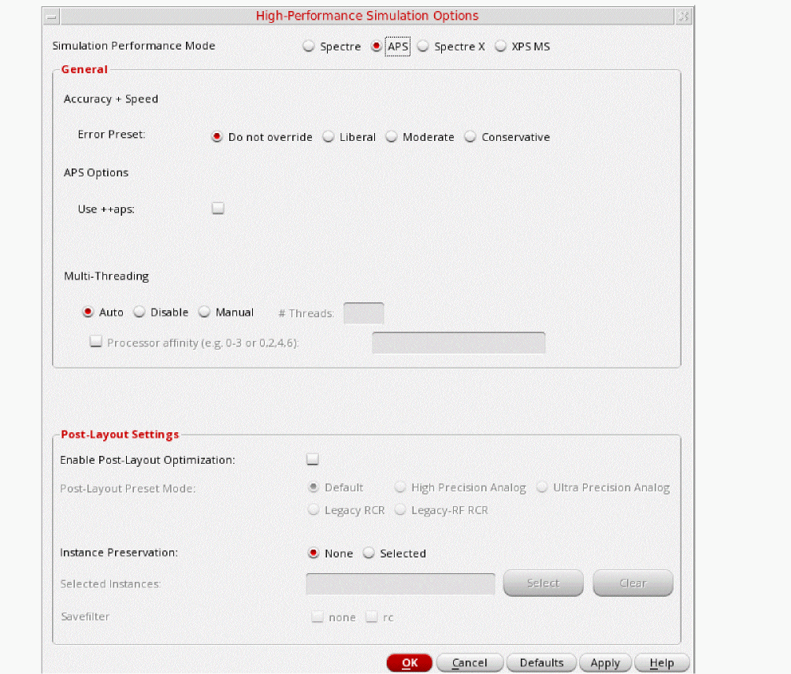 - Click OK to close the High Performance Simulation Options form.
-
Select Outputs - Save All.
The Save Options form is displayed. -
In the Select signals to output(save) section, make sure that allpub is selected.
Figure 3-148 Save Options FormThis is the default selection. This saves all of the node voltages at all levels of the hierarchy, but it does not include the node voltages inside the device models.
To save the currents, select the Select device currents (currents) option, and select nonlinear if you just want to save the device currents, or all if you want to save all the currents in the circuit. When you save currents, more disk space is required for the results file. - Click OK.
- Select Setup - Simulation Files.
-
In the Simulation Files Setup form which gets opened, enter
./by clicking in the Include Paths section. The form should look like the following:
Figure 3-149 Simulation Files Setup Form - Click OK to close the Simulation Files Setup form.
-
Select Setup - Model Libraries.
The Model Library Setup form is displayed. -
In the Model File field, type the path to the model file including the file name, as shown below.
share/gpdk180_v3.3/models/spectre/gpdk.scs.
Figure 3-150 Model Library Setup FormYou can also browse to gpdk.scs file and then set the Section to stat. - Click OK to close the Model Library Setup form.
-
Click Analyses - Choose... in ADE Explorer.
The Choosing Analyses form is displayed.
Figure 3-151 The Choosing Analyses Form -
In the Analysis section, select pss. The form expands, as shown below.
Figure 3-152 The Choosing Analyses Form- Setting PSS Analysis - In the Engine section, verify that Shooting is selected (this is the default).
-
In the Beat Frequency field, type
1.9G. The frequency entered here is an approximate frequency of oscillation. -
In the Number of harmonics field, type
20.
In general, you want to choose a number that is high enough to capture the nonlinearity of the circuit. -
In the Accuracy Defaults (errpreset) section, select conservative.
conservative is typically used because very small amplitude phase noise measurements are normally desired. conservative is recommended for all oscillators. - Select yes for Run Transient.
-
Type
2nin the Stop Time (tstab) field. tstab is typically set to about 2-3 periods of the oscillation frequency for ring oscillator circuits. The tstab should be long enough so that the oscillator must reach near the steady-state behavior during this phase of simulation. This would result in better convergence. - Select yes for Save Initial Transient Results. This will help in visualizing the buildup of the oscillation waveform.
-
Select the Oscillator option. This is required for simulating an autonomous circuit. The oscillator section expands, as shown below.
Figure 3-153 The Choosing Analyses Form - Oscillator Section -
In the Oscillator node+ field, click Select to the right. In the schematic, select the Int4 node. This oscillator node will be used by the simulator for the period calculation of the oscillations. It just needs to be a node that has the oscillator signal on it.
Figure 3-154 Selecting Int4 net on schematic -
Deselect the Calculate initial conditions (ic) automatically checkbox. This is because selecting this checkbox only works for feedback oscillators while ring oscillator is not a feedback oscillator. Therefore, selecting this checkbox will not be able to find an oscillatory state for ring oscillator.
The Choosing Analysis form should look like the following:
Figure 3-155 Choosing Analyses Form - PSS-Shooting Setup -
Click OK.
This will close the Choosing Analyses form. In addition, this will add the pss analysis in the Analyses section of ADE Explorer, as shown below:
Figure 3-156 ADE Explorer Simulation Window - PSS AnalysisSetting initial conditions forces the circuit to a specific state at the time zero timepoint, and then removes that force after the time zero point is calculated.
In this case, we will set one stage of the oscillator so that one differential output is high, and one differential output (in the same stage) is low.
This defines all the nodes in the circuit, and the nodes that are connected to the nodes that are forced are pulling as hard as they can to get the forced nodes to change to the other state. When the forcing condition is removed, this action starts the oscillations.
Set the initial conditions by choosing Simulation - Convergence Aids - Initial Condition in ADE Explorer, as shown below -
Figure 3-157 PSS Analysis - Setting Initial Condition in ADEThe Select Initial Condition Set form is displayed. -
Type
0(zero) in the Node Voltage field. - Select Int4_Bar node in the schematic. Note that the node highlights in the schematic.
- Click Apply.
-
Type
3.3in the Node Voltage field. -
Select the Int4 node in the schematic. Note that the node highlights in the schematic.
The populated Select Initial Condition Set dialog box would look like the following:
Figure 3-158 Setting Initial Condition Form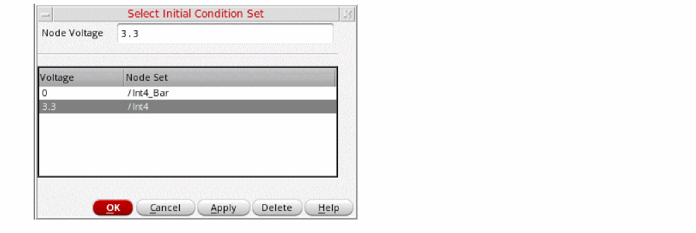 -
Click OK.
This finishes the setting of PSS Analysis with setting up of Initial Conditions.
Running the PSS analysis
Once finished setting up the PSS analysis, click the green icon on the right side of ADE Explorer or on the Schematic window to run the simulation.
This netlists the design and runs the simulation. A SpectreRF status window appears (spectre.out logfile). When the analysis has completed, you may iconify the status window.
Next, you will plot the results.
Plotting the PSS Analysis Results
-
In ADE Explorer, select Results - Direct Plot - Main Form.
Figure 3-159 Invoking Direct Plot FormThe Direct Plot Form is displayed.
You will see that there is pss analysis and tstab analysis in the Analysis section although you have only run pss analysis. The tstab analysis gets added as part of pss analysis run and is used to plot the initial transient waveforms.
Figure 3-160 The Direct Plot FormPlot the oscillator startup waveform from the tstab run. - In the Direct Plot Form, select tstab in the Analysis section.
- Leave Function as PSS Transient V which is set by default.
-
Select Net in the center of the form. (This is the default. You can also select differential nets).
The Direct Plot Form window should like the following:
Figure 3-161 PSS Analysis Direct Plot Setup - Initial Transient -
Select the Int4 net in the schematic. It is located just below the Int4 label.
Figure 3-162 Selecting Int4 net on schematic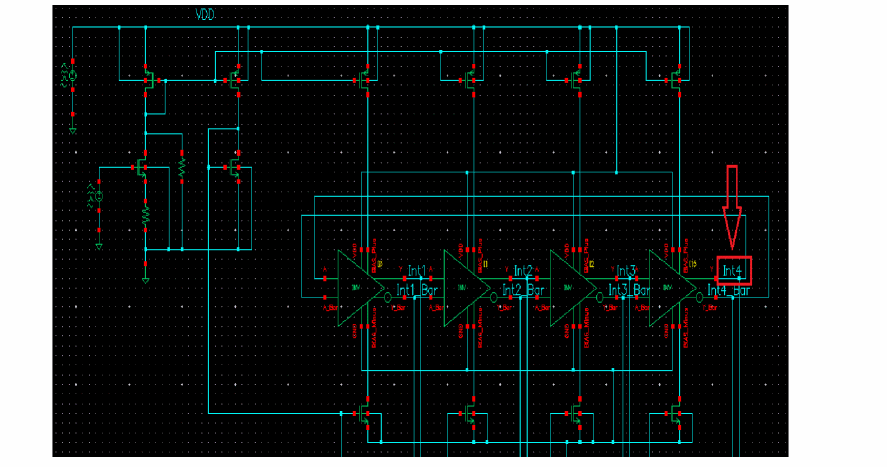The waveform window is displayed, as shown below.
Figure 3-163 PSS Analysis Initial Transient Voltage Waveform
You can see from the plot that the initial transient waveform is for 4.63158ns as mentioned in the Output log window. The oscillator is in steady state.
Next, you will plot the oscillator output spectrum.
- In the Direct Plot Form, set the Plotting Mode to New Win.
- Select pss in the Analysis section.
- Leave Function as Voltage, which is set by default.
- Select Net in the center of the form. (This is the default. You can also select differential nets).
- Select spectrum in the Sweep section. (This is the default)
- Select rms in the Signal Level section (the default is peak).
-
Select dB20 in the Modifier section.
The Direct Plot Form window should like the following:
Figure 3-164 PSS Analysis Direct Plot Form Setup -
Select Int4 net in the schematic. It is located just below the Int4 label.
Figure 3-165 Selecting Int4 net on schematicThe waveform window is displayed, as shown below.
Figure 3-166 PSS Analysis output Graph Window - Voltage Spectrum Plot -
In the waveform window, position your cursor near the first harmonic, and press the m key. Here m is the bindkey to place a trace marker on the graph. The first harmonic is chosen as this is the frequency oscillator is designed for.
Figure 3-167 PSS Analysis output Graph Window - Voltage Spectrum Plot (with marker placed) - Note that this frequency is 1.9649GHz. This is the frequency of oscillation.
- In the Direct Plot Form, click Cancel. In the waveform window, choose File - Close All Windows.
- Clean up the screen for the next set of measurements.
To summarize, a PSS analysis was set up using the Shooting Method and a simulation was run to determine the oscillation frequency of the oscillator.
Next, you will perform the FM jitter value measurements.
FM Jitter Measurement using PSS Shooting and Pnoise Jitter Analyses
This example computes the periodic steady state solution using the shooting method for the VC_Ring_Osc_Diff oscillator circuit. It then runs a periodic small-signal analysis pnoise to determine the FM jitter values of the oscillator. You perform a pss-shooting analysis first because the periodic steady state solution must be determined before you can perform any other periodic small-signal analysis like pnoise, pxf etc. to determine phase noise or transfer function and so on.
Determining FM Jitter
FM jitter calculates a standard averaged phase noise measurement, and also the AM and PM components from the modulated analysis, and adds the ability to integrate the phase noise curve to calculate the cycle jitter or the cycle-to-cycle jitter. The jitter calculations are integrated into the Direct Plot Form in ADE Explorer. All the measurements are averaged over the oscillator cycle.
PM Jitter is like the timedomain jitter measurement. You specify a threshold voltage and the timing jitter is calculated. In PM Jitter, a quantitative jitter measurement can be made from the direct plot form.
You may also refer to
In this measurement, you will perform the FM jitter measurement and plot the cycle jitter Jc.
Setting up the PSS Analysis
-
In the Schematic Window, choose Launch - ADE Explorer.
Figure 3-168 Opening ADEL window from VSE window -
In the Launch ADE Explorer dialog, select Create New View.
The Create new ADE Explorer view form is displayed.
Figure 3-169 Create new ADE Explorer view -
Leave each option to the default selections and click OK.
ADE Explorer is displayed, as shown below.
Figure 3-170 Virtuoso ADE Explorer Window -
Select Setup – Simulator in ADE Explorer.
The Choosing Simulator form is displayed. -
Select spectre for the Simulator.
Figure 3-171 Choosing Simulator Form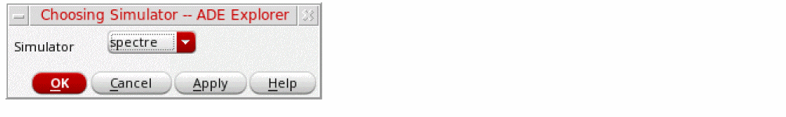 - Click OK to close the Choosing Simulator form.
-
Set up the High Performance Simulation Options.
In the ADE Explorer, select Setup - High Performance Simulation. The High Performance Simulation Options window is displayed.
In the High Performance Simulation Options window, select APS. Note that Auto is selected for Multithreading options. The effect of this is to detect the number of cores on the system (up to 64) and then multi-thread on all the available cores. Usually it is better to specify the number of threads yourself. Small circuits should use a small number of threads, and larger circuits can use more threads. The overhead of managing 16 threads on a smaller circuit may actually slow the simulation down, compared to two or four threads. Use the number of threads that maximizes the performance.
Figure 3-172 High Performance Simulation Options Form - Click OK to close the High Performance Simulation Options form.
-
Select Outputs - Save All.
The Save Options form is displayed. -
In the Select signals to output(save) section, make sure that allpub is selected.
Figure 3-173 Save Options FormThis is the default selection. This saves all of the node voltages at all levels of the hierarchy, but it does not include the node voltages inside the device models.
To save the currents, use the Select device currents (currents) option, and select nonlinear if you just want to save the device currents, or all if you want to save all the currents in the circuit. When you save currents, more disk space is required for the results file. - Click OK.
- Select Setup - Simulation Files.
-
In the Simulation Files Setup form which gets opened, enter
./by clicking in the Include Paths section. It should look like as shown below:
Figure 3-174 Simulation Files Setup Form - Click OK to close the Simulation Files Setup form.
-
Select Setup – Model Libraries.
The Model Library Setup form is displayed. -
In the Model File field, type the path to the model file including the file name, as follows:
share/gpdk180_v3.3/models/spectre/gpdk.scs.
Figure 3-175 Model Library Setup FormYou can also browse to gpdk.scs file.
-
Set the Section to
stat. - Click OK to close the form.
-
In ADE Explorer, select Analyses - Choose.
The Choosing Analyses form is displayed, as shown below.
Figure 3-176 The Choosing Analyses Form -
Select pss as Analysis. The form expands, as shown below.
Figure 3-177 The Choosing Analyses Form- Setting PSS Analysis - In the Engine section, verify that Shooting is selected (this is the default).
-
In the Beat Frequency field, type
1.9G. The frequency entered here is an approximate frequency of oscillation. -
In the Number of harmonics field, type
20.
In general, you want to choose a number that is high enough to capture the nonlinearity of the circuit. Start with 10, and run the simulation. Increase by about 50% to 15 and re-run the simulation. If the harmonics do not change appreciably, then 10 is enough. If they change, raise the number again by about 50%. Use the smallest number of harmonics for the answer to be stable. -
In the Accuracy Defaults (errpreset) section, select conservative.
conservative is typically used because very small amplitude phase noise measurements are normally desired. conservative is recommended for all the oscillators. - Select yes for Run Transient.
-
Type
2nin the Stop time (tstab) field. tstab is typically set to about 2-3 periods of the oscillation frequency for ring oscillator circuits. - Select yes for Save Initial Transient Results. This will help in visualizing the buildup of the oscillation waveform.
-
Select the Oscillator option. This is required for simulating an autonomous circuit. The oscillator section expands, as shown below.
Figure 3-178 The Choosing Analyses Form - Oscillator Section - In the Oscillator node+ field, click Select just to the right. In the schematic, select the Int4 node. This oscillator node will be used by the simulator for the period calculation of the oscillations. It just needs to be a node that has the oscillator signal on it.
-
Deselect the Calculate initial conditions (ic) automatically checkbox. This is because selecting this checkbox only works for feedback oscillators while ring oscillator is not a feedback oscillator. Therefore, selecting this checkbox will not be able to find an oscillatory state for ring oscillator.
Figure 3-179 Selecting Int4 net on schematicThe Choosing Analyses form should looks like the following:
Figure 3-180 Choosing Analyses Form - PSS-Shooting Method Setup -
Click Ok.
This will close the Choosing Analyses form. In addition, this will add the pss analysis in the Analyses section of ADE Explorer, as shown below.
Figure 3-181 ADE Explorer Simulation Window - PSS AnalysisNext, set the initial conditions, which forces the circuit to a specific state at the time zero timepoint, and then removes that force after the time zero point is calculated.
In this case, we will set one stage of the oscillator so that one differential output is high, and one differential output (in the same stage) is low.
This defines all the nodes in the circuit, and the nodes that are connected to the nodes that are forced are pulling as hard as they can to get the forced nodes to change to the other state. When the forcing condition is removed, this action starts the oscillations.
Set the initial conditions by choosing Simulation - Convergence Aids - Initial Condition in ADE Explorer, as shown below.
Figure 3-182 PSS Analysis - Setting Initial Condition in ADE ExplorerThis will open the Select Initial Condition Set dialog box. -
Type
0(zero) in the Node Voltage field. - Select the Int4_Bar node in the schematic. Note that the node highlights in the schematic.
- Click Apply.
-
Type
3.3in the Node Voltage field. - Select the Int4 node in the schematic. Note that the node highlights in the schematic.
-
Click OK.
The populated Select Initial Condition Set dialog box would look like the following:
Figure 3-183 Setting Initial Condition FormThis finishes the setting of PSS Analysis with setting up of Initial Conditions.
Setting up the Pnoise analysis
This analysis is set to do the phase noise measurement. It is run after pss analysis.
-
In the Choosing Analyses form, select pnoise. The form expands, as shown below.
Figure 3-184 The Choosing Analyses Form - pnoise Analysis Setup -
Set the Sweep Type to relative.
For oscillators, the hbnoise/pnoise frequency range is relative. Specify the harmonic number as appropriate for the system you are simulating. If you are simulating an oscillator by itself, then the harmonic number is likely to be 1. If you have an oscillator and a diode frequency doubler, then the harmonic number is likely to be 2. If you have an oscillator with a frequency divider, in the hb/pss Choosing Analyses form, you should specify the approximate frequency of oscillation for the frequency-divided signal. In the hbnoise/pnoise Choosing Analyses form, if the noise is desired on the frequency divided output, then the relative harmonic is 1. If the noise is desired at the output of the oscillator, the relative harmonic number is the divide ratio. The meaning of relative is to take the frequency of the harmonic number specified and add to it the frequencies specified in the Choosing Analyses form. If the oscillator had a 1GHz output, and the pnoise had 1M relative to the first harmonic specified, the actual output frequency is 1G + 1M, or 1001M.-
Type
1in the Relative Harmonic field as you are simulating an oscillator by itself.
Next, you will set the output frequency sweep range. Frequency sweep is set for a noise simulation as the noise is spread over the frequency range. Oscillator phase noise adds phase uncertainty for phase modulated signals. Note that BPSK, QPSK, and all QAM signals have phase information in the constellation. If the LO signal has phase noise on it, it makes it harder to demodulate the signals because there is more spread in the phase of the received signal.Therefore, it is critical to determine its behavior over a frequency range. -
In the Output Frequency Sweep Range (Hz) section, type
10Kin the Start Field. -
Type
1Gin the Stop Field.
Set the frequency sweep range as appropriate for your circuit (or application). - Set the Sweep Type to Logarithmic.
-
Type
4in the Points Per Decade field. Typically, 3 to 5 points per decade are a reasonable number to capture the noise behavior of the circuit.
-
Type
- In the Sidebands section, choose fullspectrum as the Method.
- Leave the Maximum Sideband field blank. Since fullspectrum is set, and the oscillator frequency is well above 100KHz, the Maximum sideband field should be left blank.
-
Set the Output to voltage.
-
Type
/V4Pin the Positive Output Node field. You can also select V4P net from schematic by clicking Select on the right of the Positive Output Node field and then selecting the net just below the out label in schematic. -
Type
/V4Min the Negative Output Node field. If the second node, that is, the Negative Output Node is left blank, it will be connected to the global ground node automatically. However, if you have differential oscillator, you need to specify both the nodes.
-
Type
- Select timeaverage from the Noise Type drop down list.
-
Select the ALL(AM,PM,USB,LSB) option.
Figure 3-185 Selecting V4P and V4M net from the schematic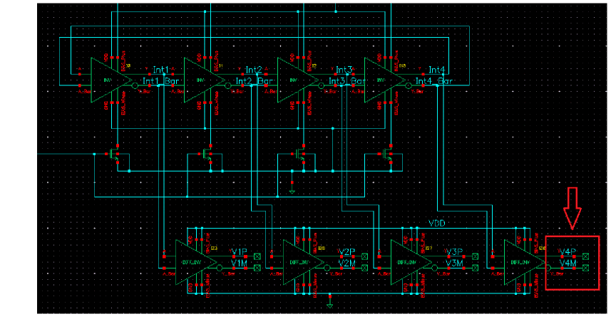The Choosing Analyses form should look like the following:
Figure 3-186 Choosing Analysis Form - pnoise Analysis Setup -
Click OK to close the Choosing Analyses form.
This will add the pnoise analysis along with pss analysis in the Analyses section of ADE Explorer, as shown below:
Figure 3-187 ADE Explorer Simulation Window - pss and pnoise-jitter analysis setup
Running the PSS and Pnoise analysis
Once finished setting up the PSS and Pnoise Analyses click the green icon on the right of ADE Explorer or on the Schematic window to run the simulation.
This netlists the design and runs the simulation. A SpectreRF status window appears (spectre.out logfile). When the analysis has completed, you may iconify the status window.
Next, you will plot the results.
First Plot the oscillator phase noise based on pnoise analysis -
-
In ADE Explorer, select Results - Direct Plot - Main Form.
The Direct Plot Form is displayed, as shown below.
Figure 3-188 pss and pnoise Analysis Direct Plot Form - In the Direct Plot Form, select pnoise in the Analysis section. The form changes.
- Select PM in the Type section.
-
Select Phase Noise in the Function section.
The Direct Plot Form Setup should look like the following:
Figure 3-189 pss and pnoise FM jitter Analysis Direct Plot Form Setup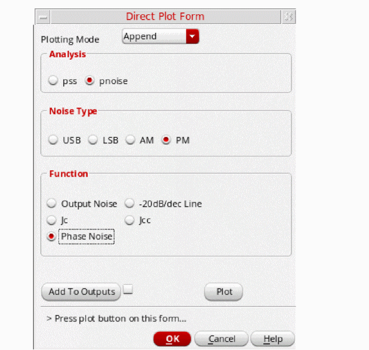 -
Click Plot.
The oscillator phase noise curve is plotted. This is a Single Sideband (SSB) Plot.
Figure 3-190 Phase Noise (SSB) plot from pnoise Analysis
Next, plot the Jc (cycle or period) jitter value.
-
In the Direct Plot Form, select Jc in the Function section.
The form expands. Jc is cycle or period jitter while Jcc is cycle-to-cycle or period-to-period jitter. -
Leave Number of Cycles (k) as
1(which is set by default).
Number of cycles determines whether one period or k-periods jitter will be computed. In this example, you are going to determine only one cycle Jc (cycle) jitter. - Leave Signal Level as rms (this is selected by default). rms jitter is typically used.
-
In the Modifier section, leave the default selection as Second.
Here, the other options are UI which is Unit interval, and ppm which is parts per million. Select the Modifier value based on the units you are using in your design specifications. -
Leave the Freq. Multiplier set to
1(which is the default value).
Use the Freq. Multiplier parameter when the selected output is not at the PSS fundamental/beat frequency. -
Fill in the Start Frequency (Hz) and Stop Frequency (Hz) fields. These are the limits of integration to determine jitter. The appropriate values are included either in the jitter specifications or in the verification methodology. The best values to use also depend on the circuit properties. For a small Number of Cycles [k], such as a short observation time of one or a few periods, the lower frequency noise does not contribute much to either Jc or Jcc jitter. For a larger Number of Cycles [k], the lower frequency noise is important.
Refer to the Jitter Measurements Using SpectreRF Application Note for more information on how to set up the lower limit of the integration.
Figure 3-191 Direct Plot pnoise jitter Jc Setup
Since the Jc value appears as a label on the plot, it is important that there is a plot window already open when the Jc value is plotted/calculated.
To summarize, PSS analysis using Shooting Engine and Pnoise was setup and simulation was run to determine the FM jitter of the oscillator.
Next you will determine the tuning range and phase noise of the Ring Oscillator.
Calculating the Swept Tuning Range and Phase Noise for the Ring Oscillator
This example computes the swept periodic steady state solution using the shooting method for the VC_Ring_Osc_Diff oscillator circuit. You will sweep the tuning voltage to determine its effect on oscillation frequency. It then runs a periodic small-signal analysis pnoise to determine the phase noise of the oscillator. You perform a PSS-Shooting analysis first because the periodic steady state solution must be determined before you can perform any other periodic small-signal analysis, such as pnoise pxf to determine phase noise or transfer function and so on.
Setting up the PSS Analysis
-
In the Schematic Window, choose Launch - ADE Explorer.
Figure 3-193 Opening ADE Explorer window from VSE window -
In the Launch ADE Explorer dialog, select Create New View.
The Create new ADE Explorer view form is displayed.
Figure 3-194 Create new ADE Explorer view -
Leave each option to the default selections and click OK.
ADE Explorer is displayed, as shown below.
Figure 3-195 ADE Explorer Window -
Select Setup – Simulator in ADE Explorer.
The Choosing Simulator form is displayed. -
Select spectre as the Simulator.
Figure 3-196 Choosing Simulator Form - Click OK to close the Choosing Simulator form.
-
Set up the High Performance Simulation Options, as follows:
In ADE Explorer, select Setup - High Performance Simulation. The High Performance Simulation Options window is displayed.
In the High Performance Simulation Options window, select APS. Note that Auto is selected for Multithreading options. The effect of this is to detect the number of cores on the system (up to 64) and then multi-thread on all the available cores. Usually it is better to specify the number of threads yourself. Small circuits should use a small number of threads, and larger circuits can use more threads. The overhead of managing 16 threads on a smaller circuit may actually slow the simulation down, compared to two or four threads. Use the number of threads that maximizes the performance.
Figure 3-197 High Performance Simulation Options Form - Click OK to close the High Performance Simulation Options form.
-
Select Outputs - Save All.
The Save Options form is displayed. -
In the Select signals to output(save) section, make sure that allpub is selected.
Figure 3-198 Save Options FormThis is the default selection. This saves all of the node voltages at all levels of the hierarchy, but it does not include the node voltages inside the device models.
To save the currents, use the Select device currents (currents) option, and select nonlinear if you just want to save the device currents, or select all if you want to save all the currents in the circuit. When you save currents, you require more disk space for the results file. - Click OK.
- Select Setup - Simulation Files.
-
In the Simulation Files Setup form which opens, enter
./by clicking in the Include Paths section. The Simulation Files Setup form should look like the following:
Figure 3-199 Simulation Files Setup Form - Click OK to close the Simulation Files Setup form.
-
Select Setup – Model Libraries.
The Model Library Setup form is displayed. -
In the Model File field, type the following path to the model file including the file name:
share/gpdk180_v3.3/models/spectre/gpdk.scs.
Figure 3-200 Model Library Setup FormYou can also browse to gpdk.scs file. Set the Section to stat. - Click OK to close the Model Library Setup form.
-
Select Analyses - Choose.
The Choosing Analyses form is displayed.
Figure 3-201 The Choosing Analyses Form -
In the Analysis section, select pss. The form expands, as shown below.
Figure 3-202 The Choosing Analyses Form- Setting PSS Analysis - In the Engine section, ensure that Shooting is selected (this is the default).
-
In the Beat Frequency field, type
1G.
The frequency entered here is an approximate frequency of oscillation. Normally, the oscillation frequency is set near the actual oscillation frequency. In this case, we have a very wide tuning range for this oscillator. A value near the middle frequency is chosen so that pss can converge on all the frequencies that are produced in the sweep. -
In the Number of harmonics field, type
20.
In general, you want to choose a number that is high enough to capture the nonlinearity of the circuit.
For example, in this measurement you would be running fullspectrum pnoise. For fullspectrum pnoise, start with 10 pss harmonics, select fullspectrum, and select APS. Run the simulation, and plot the noise result. Now increase the number of harmonics which forces more pss timepoints, and run the simulation again. If the pnoise result did not change, then you had enough harmonics to begin with. If the noise result did change, then increase the number of harmonics and run the simulation again till your pnoise result do not change.
In this measurement 20 number of harmonics gives stable pnoise results. -
In the Accuracy Defaults (errpreset) section, select conservative.
conservative is typically used because very small amplitude phase noise measurements are normally desired. conservative is recommended for all the oscillators. - Select yes for the Run Transient option.
-
Type
10nin the Stop Time(tstab) field.
tstab is typically set to about 2-3 periods of the oscillation frequency for ring oscillator circuits. Note that this needs to apply for the lowest frequency that is produced. For that reason, 10n is set. - Select yes for Save Initial Transient Results. This will help in visualizing the buildup of the oscillation waveform.
-
Select the Oscillator option.
This is required for simulating an autonomous circuit. The oscillator section expands, as shown below.
Figure 3-203 The Choosing Analyses Form - Oscillator Section - In the Oscillator node+ field, click Select on the right. In the schematic, select the Int4 node. This oscillator node will be used by the simulator for the period calculation of the oscillations. It just needs to be a node that has the oscillator signal on it.
-
Deselect the Calculate initial conditions (ic) automatically checkbox. This is because selecting this checkbox only works for feedback oscillators while the ring oscillator is not a feedback oscillator. Therefore, selecting this checkbox will not be able to find an oscillatory state for ring oscillator.
Figure 3-204 Selecting Int4 net on schematic -
Select the Sweep option. This allows you to sweep the tuning voltage (vtune), as explained below.
- Click the Select Design Variable button. The Select Design Variable window is displayed.
-
In the Select Design Variable window, select vtune.
Figure 3-205 Choosing vtune in Select Design Variable Form during PSS Analysis setup - Click OK to close the Select Design Variable Form.
-
In the Sweep Range section of the form, type
0.0in the Start field. -
Type
3.2in the Stop field. - By default, the Sweep Type is set to Linear.
-
Type
0.2in the Step Size field.
The sweep range for vtune is set based on for what tuning range your oscillator is designed for. This would be based on your oscillator design specifications.
- Click Apply in Choosing Analyses Form. It checks the entries in the form for legality.
The completed Choosing Analyses form should like the figure below.
Figure 3-206 Choosing Analyses Form - PSS-Shooting Method Setup - Part1
Setting up the Pnoise analysis
This analysis is set to do the phase noise measurement. It is run after pss analysis.
-
In the Choosing Analyses form, select pnoise. The form expands, as shown below.
Figure 3-207 The Choosing Analyses Form - pnoise Analysis Setup -
Leave the Sweep Type to relative.
For oscillators, the hbnoise/pnoise frequency range defaults to relative. Specify the harmonic number as appropriate for the system you are simulating. If you are simulating an oscillator by itself, then the harmonic number is likely to be 1. If you have an oscillator and a diode frequency doubler, then the harmonic number is likely to be 2. If you have an oscillator with a frequency divider, in the hb/pss form, you should specify the approximate frequency of oscillation for the frequency-divided signal. In the hbnoise/pnoise form, if the noise is desired on the frequency divided output, then the relative harmonic is 1. If the noise is desired at the output of the oscillator, the relative harmonic number is the divide ratio. The meaning of relative is to take the frequency of the harmonic number specified and add to it the frequencies specified in the Choosing Analyses form. If the oscillator had a 1GHz output, and the pnoise had 1M relative to the first harmonic specified, the actual output frequency is 1G + 1M, or 1001M. -
Select the Method as fullspectrum in the Sidebands section.
Full-Spectrum pnoise is useful for circuits like switched-capacitor filters or sampling circuits where aliasing occurs through very high harmonics of the clock. The runtime advantages are large with no loss in accuracy of the result. Full-Spectrum pnoise is available when Shooting is selected for the pss Engine and APS is selected in the Setup - High Performance Simulation menu in ADE Explorer. Selecting fullspectrum in the pnoise form forces APS to be selected in ADE Explorer. If you are running from the command line without using +aps, fullspectrum will not be used. In normal pnoise when Shooting is selected as Engine, you need to set the maximum sideband term. In full-spectrum pnoise you do not do this except in cases where the pss beat frequency is 100KHz or less. In this case, set maximum sidebands to the 1/f noise corner frequency divided by the pss beat frequency. Pnoise calculates all the noise translations it can, based on the maximum timestep in the pss analysis. The easiest way to change the maximum timestep in pss is to increase the number of harmonics above 10 in the pss Choosing Analyses form. Full-spectrum pnoise runs faster than normal pnoise when the maximum number of sidebands in pnoise is about 50 or greater. The larger the number of sidebands, the larger the speedup for fullspectrum pnoise analysis.
Fullspectrum pnoise is available for all available noisetypes. Noise separation is not supported when fullspectrum is selected.When the default method is selected, specify the number of desired frequency translations in the Maximum sideband field. This will always be specific to the design. For a rough estimate, plot the frequency domain content, and find the harmonic number where the amplitude has dropped about 40dB. Try this number in maximum sidebands. To verify that you have enough sidebands, raise the number by about 50% and run again. If the noise result did not change, then you had enough sidebands to begin with. Up to 40 sidebands can be specified by default. If you need more than 40 sidebands, set the number of pss harmonics to the number of sidebands divided by two to four or set the pss option maxacfreq to the beat frequency times the number of pnoise sidebands. - Leave Maximum sideband field blank as explained above since the Method selected is fullspectrum.
-
Set the Output to voltage.
-
Type
/V4Pin the Positive Output Node field. You can also select V4P net from schematic by clicking Select button on the right of the Positive Output Node field and then selecting the net just below the out label in schematic. -
Type
/V4Min the Negative Output Node field. If the second node, that is, the Negative Output Node is left blank, it will be connected to the global ground node automatically. However, if you have differential oscillator, you need to specify both the nodes.
-
Type
- Choose noise type as timeaverage from the drop-down list.
-
Select the ALL(AM,PM,USB,LSB) option.
Figure 3-208 Selecting V4P and V4M net from the schematicThe Choosing Analyses form should look like the following:
Figure 3-209 Choosing Analysis Form - pnoise Analysis Setup -
Click OK to close the Choosing Analyses form. This will add the pnoise analysis along with pss analysis in the Analyses section of ADE window, as shown below.
Figure 3-210 ADE Explorer Simulation Window - pss and pnoise-jitter analysis setup
Running the PSS and Pnoise analysis
Once finished setting up the PSS and Pnoise Analyses click the green icon on the right of ADE Explorer or on the Schematic window to run the simulation.
This netlists the design and runs the simulation. A SpectreRF status window appears (spectre.out logfile). When the analysis has completed, you may iconify the status window.
Next, you will plot the results.
First Plot the oscillator output frequency, as follows:
-
In ADE Explorer, select Results - Direct Plot - Main Form.
The Direct Plot Form is displayed, as shown below.
Figure 3-211 Swept pss and pnoise Analysis Direct Plot Form - In the Direct Plot Form, select pss in the Analysis section. This is selected by default.
- Select Harmonic Frequency in the Function section.
-
In the Harmonic Frequency section, select the first harmonic. This will plot only the change in first harmonic of the oscillation frequency vs. change in oscillator’s tuning voltage.
The Direct Plot Form should look like the following:
Figure 3-212 Swept pss Analysis Direct Plot Form Setup -
Click Plot.
The oscillator tuning range is plotted. From the plot you can observe that as you increase the tuning voltage, the oscillator frequency increases.
Figure 3-213 Swept PSS Measurement Plot - Harmonic frequency variation plot
- Select File - Close All Windows to close the waveform window.
You will now plot the phase noise.
- In the Direct Plot Form, select pnoise in the Analysis section.
- Select PM for Noise Type.
-
Select Phase Noise in the Function section.
The Direct Plot Form should look like the following:
Figure 3-214 Direct Plot Phase Noise Setup -
Click Plot.
This will plot the Single Sideband Phase Noise vs. Relative Frequency graph, as shown below:
Figure 3-215 Phase Noise vs. Relative Frequency Plot
In the above plot, you have a graph of phase noise vs. relative frequency for each vtune sweep value. Next, you will modify the phase noise plot to provide more useful information.
-
In the plot window, right-click on one of the numbers on the X Axis and select Swap Sweep Var from the context menu.
Figure 3-216 X-Axis - Right Mouse Button (RMB) - Object Menu -
In Select Sweep Var dialog box which opens, select vtune from the Sweep Variables drop down list. Keep Plot Destination as New SubWindow.
Figure 3-217 Swap Sweep Var Dialog Box Window -
Click OK.
The waveform tool draws a new subwindow.
Figure 3-218 Tuning voltage vs phase noise plotIf you look at the graph on the right, you will see that the phase noise is worse at the lower end of the tuning range. - Select File - Close All Windows to close the waveform window.
- Clean up the screen for the next set of measurements.
Summary
The Simulating Oscillator section shows how to simulate and make typical measurements on an oscillator.
In this Oscillator section, the following simulation setups/measurements were shown:
- Starting and Stabilizing of Feedback Oscillators
- Loop Gain Measurement of Feedback Oscillator
- Swept Tuning Range and Phase Noise Measurement
- Starting and Stabilization of Ring Oscillators
- FM Jitter Measurement of Ring Oscillator
- Swept Tuning Range and Phase Noise for the Ring Oscillator
For more information on simulating oscillators, please refer to the chapters in the Virtuoso Spectre Circuit Simulator and Accelerated Parallel Simulator RF Analysis User Guide and the Spectre Circuit Simulator RF Analysis Theory guide.
Return to top